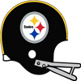
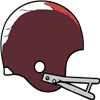

AFL Pro Bowl announced!The AFL Conference has announced their Pro Bowl squad for 1965.
QB Scott Lee - Bills (261/382, 4382 yds, 47 TD)
QB Len Dawson - Chiefs (393/519, 4231 yds, 34 TD)
RB Ken Willard - Oilers (195 att, 706 yds, 5 TD, 45 rec, 429 yds, 3 TD)
RB Wray Carlton - Bills (84 att, 434 yds, 9 TD, 31 rec, 608 yds, 7 TD)
RB Larry Garron - Chargers (239 att, 822 yds, 7 TD, 37 rec, 244 yds, 2 TD)
FB Keith Lincoln - Chargers (43 att, 220 yds, 1 TD, 6 rec, 36 yds, 1 TD)
G Billy Shaw - Bills (50 Pancakes)
G Curt Merz - Chiefs (54 Pancakes)
T Dick Schafrath - Bills (120 Pancakes)
T Bob Vogel - Chargers (78 Pancakes)
C Al Bemiller - Bills (84 Pancakes)
C Jim Otto - Raiders (56 Pancakes)
TE Frank Simpson - Chiefs (60 rec, 563 yds, 4 TD)
TE Red Mack - Raiders (35 rec, 375 yds, 2 TD)
WR Don Maynard - Jets (109 rec, 1562 yds, 12 TD)
WR Don Norton - Bills (62 rec, 985 yds, 12 TD)
WR Lance Alworth - Chargers (81 rec, 1543 yds, 16 TD)
WR Frank Jackson - Chiefs (83 rec, 1136 yds, 10 TD)
WR Tommy McDonald - Raiders (98 rec, 1486 yds, 12 TD)
CB Willie West - Bills (71 Tck, 1 Sck, 3 Int, 4 FF, 2 FR)
CB Richie Petitbon - Patriots (100 Tck, 2 Int, 3 FF, 1 FR)
CB Bud Whitehead - Chargers (84 Tck, 1 Sck, 5 Int, 3 FF, 1 FR)
LB Don Shinnick - Oilers (99 Tck, 10 Sck, 1 FF, 1 FR)
LB Ray Nitschke - Oilers (82 Tck, 15 Sck, 1 Int, 2 FF, 3 FR)
LB Larry Grantham - Jets (129 Tck, 3 Sck, 1 Int, 1 Def TD, 4 FF, 4 FR)
LB Dan Conners - Raiders (81 Tck, 12 Sck, 1 Int, 6 FF, 2 FR)
DT Earl Johnson - Oilers (27 Tck, 5 Sck, 2 FF)
DT Arthur Lavoie - Chargers (24 Tck, 3 Sck, 1 FF, 1 FR)
DE Jerry Mays - Jets (38 Tck, 9 Sck, 3 FF, 1 FR)
DE Earl Faison - Chargers (39 Tck, 8 Sck, 4 FF)
FS Hagood Clarke - Chargers (78 Tck, 4 Int, 2 FF, 1 FR)
FS Johnny Robinson - Chiefs (81 Tck, 1 Sck, 2 Int, 2 Def TD, 3 FF, 1 FR)
SS Dean Derby - Bills (76 Tck, 2 Sck, 3 Int)
SS Claude Gibson - Chargers (65 Tck, 4 Sck, 3 FF, 1 FR)
K Newton Shifflett - Broncos (26/26 FG)
P Manuel Connolly - Chiefs (2935 yards, 31 inside 20)NFL Pro Bowl announced!The NFL Conference has announced their Pro Bowl squad for 1965.
QB Roman Gabriel - Rams (335/482, 3549 yds, 31 TD)
QB Fran Tarkenton - Vikings (320/460, 3282 yds, 26 TD)
RB Wendell Hayes - Eagles (157 att, 768 yds, 3 TD, 37 rec, 572 yds, 5 TD)
RB John David Crow - Cardinals (301 att, 1349 yds, 11 TD, 39 rec, 235 yds, 0 TD)
RB Bernie Casey - 49ers (126 att, 618 yds, 11 TD, 25 rec, 411 yds, 0 TD)
FB Don Perkins - Cowboys (45 att, 179 yds, 6 TD, 23 rec, 172 yds, 2 TD)
G Pete Case - Eagles (68 Pancakes)
G Leon Donohue - 49ers (70 Pancakes)
T Daryl Sanders - Eagles (90 Pancakes)
T Rosey Brown - Giants (89 Pancakes)
C Jon Morris - Eagles (87 Pancakes)
C Sam Bull - Steelers (56 Pancakes)
TE Ralph Smith - Eagles (43 rec, 391 yds, 3 TD)
TE Mike Ditka - Bears (69 rec, 697 yds, 2 TD)
WR Roy Jefferson - Eagles (61 rec, 1081 yds, 10 TD)
WR Raymond Berry - Colts (97 rec, 1270 yds, 8 TD)
WR Jimmy Orr - Colts (83 rec, 1292 yds, 12 TD)
WR Carroll Dale - Rams (93 rec, 1119 yds, 10 TD)
WR Paul Warfield - Vikings (67 rec, 1129 yds, 12 TD)
CB Don Burroughs - Eagles (79 Tck, 4 Int, 1 Def TD)
CB Jimmy Patton - Giants (86 Tck, 1 Sck, 3 Int, 4 FF)
CB Bobby Boyd - Colts (100 Tck, 8 Int, 1 Def TD, 1 FF, 1 FR)
LB Jim Houston - Browns (124 Tck, 10 Sck, 2 FF, 1 FR)
LB Mike Curtis - 49ers (82 Tck, 11 Sck, 3 Int, 1 Def TD, 5 FF, 1 FR)
LB Jack Pardee - Rams (123 Tck, 2 Sck, 3 Int, 2 FF, 2 FR)
LB Sherrill Headrick - Vikings (89 Tck, 12 Sck, 1 Sfty, 9 FF, 3 FR)
DT Buck Buchanan - Cardinals (36 Tck, 10 Sck, 1 FF)
DT Merlin Olsen - Rams (35 Tck, 6 Sck)
DE Willie Davis - Packers (33 Tck, 12 Sck, 3 FF)
DE Deacon Jones - Rams (52 Tck, 14 Sck, 1 Sfty, 2 FF, 1 FR)
FS Jimmy Johnson - 49ers (66 Tck, 5 Sck, 1 Int, 3 FF, 2 FR)
FS Paul Moon - Rams (52 Tck, 6 Int, 3 Def TD, 1 FR)
SS Jesse Whittenton - Packers (74 Tck, 6 Sck, 3 FF)
SS Willie Wood - Packers (77 Tck, 6 Sck, 1 FF, 2 FR)
K Johnny Schrader - Vikings (28/33 FG)
P James Madrid - Rams (2589 yards, 20 inside 20)QB Scott Lee (Buf) wins League MVP! NEW YORK -- The Buffalo Bills' QB was a landslide winner Friday in balloting by a nationwide panel of 50 sports writers and broadcasters who cover the league. Lee won the MVP award by amassing season totals of 261/382, 4382 yds, 47 TD. NEW YORK -- The Buffalo Bills' QB was a landslide winner Friday in balloting by a nationwide panel of 50 sports writers and broadcasters who cover the league. Lee won the MVP award by amassing season totals of 261/382, 4382 yds, 47 TD.
"I'm honored to receive this award because of the number of other worthy candidates who had some great years," Lee said. "It was just fun for me, truly, to watch them. I'm just glad to be a part of it."
LB Sherrill Headrick (Min) wins Defensive Player of the Year! NEW YORK -- In his own view, Sherrill Headrick put together his best professional season in 1965. How appropriate, then, that he is the Wolverine Studios Sports Newtwork 1965 Defensive Player of the Year. NEW YORK -- In his own view, Sherrill Headrick put together his best professional season in 1965. How appropriate, then, that he is the Wolverine Studios Sports Newtwork 1965 Defensive Player of the Year.
The versatile Headrick had 89 tackles, 12 sacks, 0 interceptions, and 9 forced fumbles with 0 defensive touchdowns, and was a key to the Vikings' turnaround on defense. His role on the defense earned Headrick a majority of votes Tuesday from a nationwide panel of 50 sports writers and broadcasters who cover the league.
QB Roman Gabriel (LA) wins Playoff MVP! NEW YORK -- The Los Angeles Rams' QB took home the 1965 Playoff MVP award today. Gabriel won the award by amassing playoff totals of 54/76, 623 yds, 6 TD. NEW YORK -- The Los Angeles Rams' QB took home the 1965 Playoff MVP award today. Gabriel won the award by amassing playoff totals of 54/76, 623 yds, 6 TD.
QB Scott Lee (Buf) wins Offensive Player of the Year!Buffalo Bills quarterback Scott Lee is Wolverine Studios Sports Network's Offensive Player of the Year, as selected by a panel of players, coaches and executives.
Lee received 299 first-place votes from the 583 people polled.
Lee in 1965 had 4382 yards and 47 TDs, with only 3 interceptions for a QB Rating of 143.1.RB Ken Willard (Hou) wins Offensive Rookie of the Year! NEW YORK -- The Houston Oilers' RB was a landslide winner Friday in balloting by a nationwide panel of 50 sports writers and broadcasters who cover the league. Willard won the Rookie of the Year award by amassing season totals of 195 att, 706 yds, 5 TD, 45 rec, 429 yds, 3 TD. NEW YORK -- The Houston Oilers' RB was a landslide winner Friday in balloting by a nationwide panel of 50 sports writers and broadcasters who cover the league. Willard won the Rookie of the Year award by amassing season totals of 195 att, 706 yds, 5 TD, 45 rec, 429 yds, 3 TD.
LB Mike Curtis (SF) wins Defensive Rookie of the Year! NEW YORK -- The San Francisco 49ers' LB was a landslide winner Friday in balloting by a nationwide panel of 50 sports writers and broadcasters who cover the league. Curtis won the Rookie of the Year award by amassing season totals of 82 Tck, 11 Sck, 3 Int, 1 Def TD, 5 FF, 1 FR. NEW YORK -- The San Francisco 49ers' LB was a landslide winner Friday in balloting by a nationwide panel of 50 sports writers and broadcasters who cover the league. Curtis won the Rookie of the Year award by amassing season totals of 82 Tck, 11 Sck, 3 Int, 1 Def TD, 5 FF, 1 FR.
1965 Super BowlThe Los Angeles Rams have defeated the Kansas City Chiefs in the 1965 Super Bowl.
The final score was Rams 51 - Chiefs 24.
Roman Gabriel - QB had a dominant game on offense playing a key part in the victory.
On defense Merlin Olsen - DT had a stellar outing helping seal the win.AFL Championship Game The Kansas City Chiefs have defeated the Buffalo Bills in the 1965 AFL Championship Game. The Kansas City Chiefs have defeated the Buffalo Bills in the 1965 AFL Championship Game.
The final score was Bills 13 - Chiefs 40.
Len Dawson - QB had a dominant game on offense playing a key part in the victory.
On defense Fred Williams - DT had a stellar outing helping seal the win.
NFL Championship GameThe Los Angeles Rams have defeated the Washington Redskins in the 1965 NFL Championship Game.
The final score was Rams 45 - Redskins 10.
Roman Gabriel - QB had a dominant game on offense playing a key part in the victory.
On defense Merlin Olsen - DT had a stellar outing helping seal the win.Oakland Raiders re-signs Alexander Gibson as Defensive Coordinator The Raiders have announced that they have given Alexander Gibson a new contract. Gibson will continue to serve as Defensive Coordinator for 3 years earning 5.5 million pr year. The Raiders have announced that they have given Alexander Gibson a new contract. Gibson will continue to serve as Defensive Coordinator for 3 years earning 5.5 million pr year.
San Diego Chargers re-signs Ronald Forte as Defensive Coordinator The Chargers have announced that they have given Ronald Forte a new contract. Forte will continue to serve as Defensive Coordinator for 7 years earning 5.3 million pr year. The Chargers have announced that they have given Ronald Forte a new contract. Forte will continue to serve as Defensive Coordinator for 7 years earning 5.3 million pr year.
San Diego Chargers re-signs Willie Luong as Offensive CoordinatorThe Chargers have announced that they have given Willie Luong a new contract. Luong will continue to serve as Offensive Coordinator for 4 years earning 5.3 million pr year.Week 16: LB Jack Pardee (LA) wins Defensive Player of the WeekLB Jack Pardee of the Los Angeles Rams has earned the Defensive Player of the Week award. Pardee finished with 8 Tck, 1 Sck, 1 Int, 1 FF.Week 16: QB Scott Lee (Buf) wins Offensive Player of the WeekThe Buffalo Bills' Scott Lee threw 5 touchdowns, completing 16 of 24 passes for 352 yards in the Bills victory over the New York Jets.
After being drafted in Round 3 of the 1963 amateur draft, season number 2 for Lee, has seen some impressive numbers including 47 touchdown passes this season.Game Recaps for Week 16Browns - 38, Steelers - 24
Eagles - 51, Cardinals - 31
Rams - 26, Lions - 23
Vikings - 45, Colts - 27
Packers - 15, Cowboys - 13
Bills - 66, Jets - 14
Chargers - 24, Chiefs - 20
Patriots - 30, Broncos - 20
Raiders - 13, Oilers - 13Game of the Week: San Diego Chargers at Kansas City ChiefsOur Expert Predictions:
Jeremy Piper : San Diego Chargers
They will put up a lot of points.
Mary Moore : Kansas City Chiefs
Looking at how the teams match up, I think that the Chiefs is going to rely on Johnny Robinson - FS on their defense. Big names make big plays in big games, I cannot wait to watch this. This will be a great game to watch.
Jim Nox : Kansas City Chiefs
Look for their defense to dominate.
Darren Francis : San Diego Chargers
For this game, it seems clear that there is this DE named Earl Faison. He is getting paid a lot. The reason he is getting paid a lot is that he is really good. Do I need to say more?
Defense dominates in San Francisco.The 49ers front four is beating up the men on the other side of the ball so far this season with a total of 14 sacks, 1 forced fumbles and 93 tackles in 14 games.Baird media buzzThe local media seems to have picked their newest fancy: Bill Baird - CB. Bill Baird - CB is everywhere in the Los Angeles media. Dealing with interview requests and evaluating endorsement deals threatens to detract from his play on the field. Seeing how Baird navigates this surging media attention will be an interesting story to follow. As for the team, the Rams are sure to be enjoying his time in the spotlight, as their PR department is having their jobs done for them.Week 15: RB Wendell Hayes (Phi) wins Offensive Player of the Week The honor comes after Hayes's 18 att, 170 yds, 1 TD performance against the Pittsburgh Steelers. Hayes from Humboldt State was selected in round 2, 2 years ago. The honor comes after Hayes's 18 att, 170 yds, 1 TD performance against the Pittsburgh Steelers. Hayes from Humboldt State was selected in round 2, 2 years ago.
Hayes now has 708 Rushing Yards and 2 Touchdowns for the season.
Week 15: FS Paul Moon (LA) wins Defensive Player of the WeekFS Moon's ball hawking ability was on display in the Rams 41-17 game with the St. Louis Cardinals. He finished with 8 Tck, 2 Int, 2 Def TD.
"Paul has the unique ability to make plays and generate turnovers." -Rams Defensive CoordinatorGame Recaps for Week 15Cowboys - 13, Browns - 7
Eagles - 25, Steelers - 21
Redskins - 25, Giants - 24
Vikings - 33, Bears - 7
49ers - 31, Lions - 7
Packers - 38, Colts - 20
Rams - 41, Cardinals - 17
Patriots - 30, Broncos - 16
Chiefs - 42, Jets - 30
Raiders - 27, Oilers - 24
Chargers - 34, Bills - 21Game of the Week: Los Angeles Rams at St. Louis CardinalsOur Expert Predictions:
Jeremy Piper : Los Angeles Rams
This is a high powered offense. They are 5th in the league passing touchdowns with 29. They are 3rd in the league points scored per game. They average 29.7!
Mary Moore : Los Angeles Rams
Looking at the two rosters, my line of thinking is that Eddie Meador - FS will drive the offense crazy. And you can take that with you to the bank.
Jim Nox : St. Louis Cardinals
The leadership on this team is great. Having a guy like Larry Wilson - CB on the field and in the locker room is exactly what you need to win games like this.
Darren Francis : St. Louis Cardinals
Looking at the teams, my money would be on that Brice Paterson - LB is bound to have an impact. The offense will have to gameplan for him if they want to stand even the slightest chance. Easy prediction.
Week 14: LB Brice Paterson (StL) wins Defensive Player of the Week LB Paterson absolutely dominated in the Cardinals 38-36 game with the Pittsburgh Steelers. He finished with 7 Tck, 1 Int, 1 Def TD, 1 FF, 1 FR. LB Paterson absolutely dominated in the Cardinals 38-36 game with the Pittsburgh Steelers. He finished with 7 Tck, 1 Int, 1 Def TD, 1 FF, 1 FR.
Week 14: QB Scott Lee (Buf) wins Offensive Player of the WeekThe league announced Buffalo Bills quarterback Scott Lee has been named Offensive Player of the Week.
The Bills defeated the Houston Oilers, 35 to 25. Lee did his part, throwing 4 touchdowns, completing 26 of 36 passes for 382 yards. His outstanding performance now brings his season Touchdown to Interception Ratio to 40 to 3, and a passer rating of 142.0.Coach Showdown with Simon Sly (Season 1965 Week 15)Simon Sly is back with this week's edition of Coach Showdown. We have an odd couple for you this week.
LUKE NELSON, DEFENSIVE COORDINATOR, DENVER BRONCOS
The Broncos currently sit at 4-7.
Luke Nelson wants to stay unpredictable on defense, favoring a balanced approach. He loves football, and it shows that this is his dreamjob. His eagerness to discuss all aspects of the game is infectious in an organisation.
Luke Nelson runs a 3-3-5 Hybrid defense. The onus is on the safeties in his system. It features primarily zone coverage. He wants defensive linemen who can help in runsupport. Nelson aims to field versatile linebackers.
They are 22nd in sacks with 14.
They are 22nd in points allowed, averaging 32.9.
They are 17th in pass defense with 278.4 yards given up per game.
They are 20th in run defense. Giving up 132.8 yards per game.
They are 11th in interceptions with 9.
They are 7th in the league in tackles for loss.
They are 18th in forced fumbles.
Nelson is slightly more detail oriented than Blythe.
Nelson is better suited to lead a team than Blythe.
Nelson motivates his team a little better than Blythe.
Nelson prepares better than Blythe.
Nelson works with young players somewhat better than Blythe.
ALVIN BLYTHE, DEFENSIVE COORDINATOR, ST. LOUIS CARDINALS
The Cardinals currently sit at 5-5.
Alvin Blythe does not like gambling on defense. Advocating a bend, but don't break mindset. Professionalism is the key for him. He demands accountability from everyone around him.
Alvin Blythe runs a 3-3-5 defense. The defense revolves around the linebackers. It features primarily zone coverage. He targets the rungame, daring the offense to pass. To fit his scheme, linebackers must be sure tacklers, who can help shut down the run.
They are 16th in sacks with 27.
They are 14th in points allowed, averaging 25.6.
They are 4th in pass defense with 202.2 yards given up per game.
They are 17th in run defense. Giving up 120.7 yards per game.
They are 9th in interceptions with 9.
They are 20th in the league in tackles for loss.
They are 9th in forced fumbles.
Blythe outperforms Nelson in scouting.
Blythe outperforms Nelson in assessing player ability.
Blythe has a slightly better grasp of coaching defense than Nelson.
Blythe is not as rigid as Nelson.
Game Recaps for Week 14Cardinals - 38, Steelers - 36
Redskins - 22, Eagles - 10
Lions - 24, Packers - 17
Rams - 25, Bears - 25
49ers - 41, Colts - 20
Bills - 35, Oilers - 25
Broncos - 28, Jets - 28
Chiefs - 52, Patriots - 14
Raiders - 35, Chargers - 31Game of the Week: St. Louis Cardinals at Pittsburgh SteelersOur Expert Predictions:
Jeremy Piper : Pittsburgh Steelers
I think their defense will carry them. They are 4th in points allowed, averaging only 20.9. They are 1st in pass defense. They only give up 181.4 per game. They are 4th in interceptions with 12.
Mary Moore : St. Louis Cardinals
They will keep their winstreak going. Expect a great game.
Jim Nox : Pittsburgh Steelers
The amount leadership on the Steelers will really help them this week. You only need to look at guys like Johnny Sample - FS and Ed Brown - QB to see the importance. Leadership like that helps you win games. And you can take that with you to the bank.
Darren Francis : St. Louis Cardinals
Looking at the teams, I have no doubt that the defense will struggle to counter Irv Goode - G. Watch out for him.
Bills racking up yards!The offense of the Bills is stomping a mudhole in everybody this year, posting 5442 total yards and 424 points thus far in 11 games. Quarterback Scott Lee - QB and receiver Don Norton - WR have tag-teamed to the tune of 910 yards this season, while Running Back Scott Lee - QB has juked, jived and steamrolled his way for 562. The hogs on the line has smashed opponents for 438 pancakes this season while allowing only 26 quarterback sacks.Week 13: CB Ralph Stowe (Pit) wins Defensive Player of the WeekCB Stowe's ball hawking ability was on display in the Steelers 38-30 game with the Cleveland Browns. He finished with 6 Tck, 1 Int, 1 Def TD.
"Ralph has the unique ability to make plays and generate turnovers." -Steelers Defensive CoordinatorWeek 13: RB Wendell Hayes (Phi) wins Offensive Player of the WeekThe honor comes after Hayes's 13 att, 101 yds, 0 TD, 1 rec, 40 yds, 1 TD performance against the New York Giants. Hayes from Humboldt State was selected in round 2, 2 years ago.
Hayes now has 498 Rushing Yards and 1 Touchdowns for the season.Game Recaps for Week 13Steelers - 38, Browns - 30
Eagles - 38, Giants - 28
Colts - 24, 49ers - 17Buffalo Bills re-signs Jeremy Otero as Head CoachThe Bills have announced that they have given Jeremy Otero a new contract. Otero will continue to serve as Head Coach for 4 years earning 6 million pr year.Philadelphia Eagles re-signs Johnathan Tran as Head CoachThe Eagles have announced that they have given Johnathan Tran a new contract. Tran will continue to serve as Head Coach for 4 years earning 3 million pr year.Game of the Week: Baltimore Colts at San Francisco 49ersOur Expert Predictions:
Jeremy Piper : San Francisco 49ers
The 49ers win. I see no reason to think otherwise.
Mary Moore : Baltimore Colts
They might even win with three touchdowns.
Jim Nox : Baltimore Colts
The leadership on the Colts is great. You look at guys like Bobby Boyd - CB and what he does for a team. Leadership like that helps you win games.
Darren Francis : San Francisco 49ers
I really like their defense. They are 3rd in sacks with 44. They are 3rd in points allowed, averaging only 18.9. They are 3rd in run defense. Giving up only 68.9 yards per game. They are 2nd in forced fumbles.
Coach Showdown with Simon Sly (Season 1965 Week 13)Time for this weeks get to know your coaches. As always, Simon Sly deliver with this weeks coach comparison. Hope you enjoy it.
NICHOLAS JOHNSON, OFFENSIVE COORDINATOR, MINNESOTA VIKINGS
The Vikings currently sit at 7-3.
Nicholas Johnson runs his offense conservatively. He is a silent, strong leader. He does his job meticulously without making unnecessary waves, and expects those around him to do the same.
Nicholas Johnson runs a pass heavy Spread offense. Johnson likes to go over the top of the defense in the passing game. The passing game is predicated on spreading the ball around to multiple targets.
They are 7th in the league pass completion percentage. They are 9th in the league passing touchdowns with 24. They are 12th in the league passing yards per game. Averaging 242.2.They are 16th in the league in sacks allowed.They are 6th in the league in pancakes.They are 11th in the league in passes of more than 20 yards.They are 14th in the league average yards per rush.They are 18th in the league rushing touchdowns with 7.They are 11th in the league rushing yards per game. They average 98.3.They are 9th in the league points scored per game. With an average of 24.9.
ANTHONY DAVIS, OFFENSIVE COORDINATOR, DALLAS COWBOYS
The Cowboys currently sit at 5-5.
Anthony Davis runs his offense conservatively. He is serious and unrelenting, asserts his authority and has little tolerance for distractions.
Anthony Davis runs a pass heavy Pro Style Hybrid offense. His offense features a lot of outside runs. Davis likes to go over the top of the defense in the passing game. The passing game is predicated on spreading the ball around to multiple targets.
They are 22nd in the league pass completion percentage.
They are 22nd in the league passing touchdowns with 10.
They are 22nd in the league passing yards per game. Averaging 159.5.
They are 15th in the league in sacks allowed.
They are 17th in the league in pancakes.
They are 21st in the league in passes of more than 20 yards.
They are 3rd in the league average yards per rush.
They are 7th in the league rushing touchdowns with 12.
They are 14th in the league rushing yards per game. They average 96.8.
They are 19th in the league points scored per game. With an average of 18.7.
Davis outperforms Johnson in player development.
Davis takes much more command and is more respected by his players than Johnson.
Week 12: QB Sonny Gibbs (Buf) wins Offensive Player of the WeekThe Buffalo Bills' Sonny Gibbs threw 4 touchdowns, completing 21 of 34 passes for 501 yards in the Bills victory over the Kansas City Chiefs.
After being drafted in Round 0 of the 0 amateur draft, season number 1 for Gibbs, has seen some impressive numbers including 6 touchdown passes this season.Week 12: LB Johnny Baker (Buf) wins Defensive Player of the WeekLB Johnny Baker of the Buffalo Bills has earned the Defensive Player of the Week award. Baker finished with 12 Tck, 2 Sck, 1 FR.Game Recaps for Week 12Browns - 20, Giants - 12
Steelers - 24, Cowboys - 24
Cardinals - 20, Redskins - 20
Vikings - 31, Packers - 10
49ers - 28, Bears - 23
Rams - 38, Colts - 37
Lions - 52, Eagles - 31
Bills - 28, Chiefs - 10
Jets - 59, Oilers - 10
Raiders - 36, Patriots - 7
Chargers - 31, Broncos - 27Pittsburgh Steelers re-signs Jeffrey Hidalgo as Offensive CoordinatorThe Steelers have announced that they have given Jeffrey Hidalgo a new contract. Hidalgo will continue to serve as Offensive Coordinator for 4 years earning 5.5 million pr year.Game of the Week: Kansas City Chiefs at Buffalo BillsOur Expert Predictions:
Jeremy Piper : Buffalo Bills
They will rely on their defense to pull them through. They are 1st in run defense. Giving up only 53.7 yards per game. They are 1st in the league in tackles for loss. They are 1st in the league pass average yards per rush.
Mary Moore : Kansas City Chiefs
For this game, my intuition is that Johnny Robinson - FS is going to wreck havoc for the Chiefs defense.
Jim Nox : Buffalo Bills
They will get back in the winning column this week. I see a lot of points being scored in this game.
Darren Francis : Buffalo Bills
People tend to underestimate their offense. They are 1st in the league passing touchdowns with 38. They are 1st in the league passing yards per game. They average 360.2! They are maulers, 1st in the league in pancakes. They are 1st in the league average yards per rush. They are 3rd in the league rushing touchdowns with 13. They are 1st in the league rushing yards per game. They average 131.2! They are 1st in the league points scored per game. They average 39.6!
Bills racking up yards!The offense of the Bills is beating the stew out of everybody this year, posting 4914 total yards and 396 points thus far in 10 games. Quarterback Scott Lee - QB and receiver Don Norton - WR have clowned on opponents to the tune of 801 yards this season, while Running Back Scott Lee - QB has plowed his way for 562. The big men on the line has smashed opponents for 399 pancakes this season while surrendering only 24 quarterback sacks.Week 11: QB Len Dawson (KC) wins Offensive Player of the WeekThe Kansas City Chiefs' Len Dawson threw 3 touchdowns, completing 39 of 43 passes for 454 yards in the Chiefs victory over the Oakland Raiders.
After being drafted in Round 0 of the 0 amateur draft, season number 8 for Dawson, has seen some impressive numbers including 24 touchdown passes this season.Week 11: DE Deacon Jones (LA) wins Defensive Player of the WeekDE Deacon Jones of the Los Angeles Rams has earned the Defensive Player of the Week award. Jones finished with 3 Tck, 3 Sck, 2 FF, 1 FR.Game Recaps for Week 11Cowboys - 24, Steelers - 21
Browns - 31, Giants - 21
Vikings - 34, Bears - 3
49ers - 38, Rams - 0
Cardinals - 21, Redskins - 9
Colts - 21, Lions - 13
Broncos - 27, Jets - 25
Chiefs - 34, Raiders - 28
Chargers - 35, Oilers - 27San Francisco 49ers re-signs Larry Good as Defensive CoordinatorThe 49ers have announced that they have given Larry Good a new contract. Good will continue to serve as Defensive Coordinator for 2 years earning 5 million pr year.Game of the Week: Los Angeles Rams at San Francisco 49ersOur Expert Predictions:
Jeremy Piper : San Francisco 49ers
They will put up a lot of points.
Mary Moore : San Francisco 49ers
Look for their offense to dominate. They are maulers, 4th in the league in pancakes. They are 3rd in the league in passes of more than 20 yards. They are 5th in the league rushing touchdowns with 11. Replace the batteries in your remote. You do not want to miss this game.
Jim Nox : Los Angeles Rams
In this game, you would be a fool not to think Ernie Koy - RB will have an impact. He has been tearing it up so far this season. He will continue to do so today.
Darren Francis : San Francisco 49ers
I may be biased here, but I think the 49ers are obviously the better team. This will either be wildly entertaining or a dull grind. I see no middle between the two.
Week 10: RB Bernie Casey (SF) wins Offensive Player of the WeekThe honor comes after Casey's 11 att, 54 yds, 1 TD, 5 rec, 120 yds, 0 TD performance against the Cleveland Browns. Casey from Bowling Green was selected in round 0, 4 years ago.
Casey now has 371 Rushing Yards and 8 Touchdowns for the season.Coach Showdown with Simon Sly (Season 1965 Week 11)Simon Sly is here to bring you another edition of Coach Showdown. Let us get on with it.
EDWIN MARX, DEFENSIVE COORDINATOR, PITTSBURGH STEELERS
The Steelers currently sit at 5-2.
Edwin Marx wants to stay unpredictable on defense, favoring a balanced approach. He is serious and unrelenting, asserts his authority and has little tolerance for distractions.
Edwin Marx runs a 3-4 defense. The defense revolves around the linebackers. He prefers mixing up coverage. Marx aims to field versatile linebackers.
They are 19th in sacks with 12.
They are 4th in points allowed, averaging 19.
They are 1st in pass defense with 165.2 yards given up per game.
They are 21st in run defense. Giving up 135.1 yards per game.
They are 13th in interceptions with 6.
They are 20th in the league in tackles for loss.
They are 21st in forced fumbles.
Marx is better suited to lead a team than Lawson.
WILLIAM LAWSON, DEFENSIVE COORDINATOR, MINNESOTA VIKINGS
The Vikings currently sit at 5-3.
William Lawson does not like gambling on defense. Advocating a bend, but don't break mindset. He adapts his demeanor to the situation, and does whatever he thinks it takes to get through to his players and co-workers.
William Lawson runs a 5-2 defense. The scheme depends on dominating in the trenches. He prefers mixing up coverage. He wants defensive linemen who can help in runsupport. Lawson aims to field versatile linebackers.
They are 2nd in sacks with 38.
They are 2nd in points allowed, averaging 18.1.
They are 6th in pass defense with 229.6 yards given up per game.
They are 4th in run defense. Giving up 70.5 yards per game.
They are 9th in interceptions with 7.
They are 12th in the league in tackles for loss.
They are 13th in forced fumbles.
Lawson outperforms Marx in assessing player ability.
Lawson outperforms Marx in player development.
Lawson exhibits way more flexibility than Marx.
Lawson works with young players somewhat better than Marx.
Week 10: DT Earl Johnson (Hou) wins Defensive Player of the WeekDT Johnson absolutely dominated in the Oilers 17-10 game with the Buffalo Bills. He finished with 5 Tck, 2 Sck, 1 FF.Game Recaps for Week 10Eagles - 17, Steelers - 13
Cardinals - 24, Giants - 21
Redskins - 30, Cowboys - 3
Bears - 26, Packers - 17
Lions - 27, Colts - 10
Vikings - 21, Rams - 17
49ers - 33, Browns - 9
Raiders - 20, Jets - 17
Chiefs - 20, Broncos - 3
Chargers - 24, Patriots - 21
Oilers - 17, Bills - 10Game of the Week: Minnesota Vikings at Los Angeles RamsOur Expert Predictions:
Jeremy Piper : Minnesota Vikings
Boy, oh boy am I looking forward to this.
Mary Moore : Los Angeles Rams
For this game, my opinion is that Jack Pardee - LB will ruin your day on offense. You heard it here first.
Jim Nox : Minnesota Vikings
Head coach Donald Chan runs a tight ship in Minnesota. I feel certain he has prepared an excellent gameplan. He is running an explosive defense.
Darren Francis : Minnesota Vikings
They will break their losing streak with a W this week. It may come down to the wire though.
Week 9: QB Len Dawson (KC) wins Offensive Player of the WeekThe Kansas City Chiefs' Len Dawson threw 3 touchdowns, completing 29 of 31 passes for 357 yards in the Chiefs victory over the Houston Oilers.
After being drafted in Round 0 of the 0 amateur draft, season number 8 for Dawson, has seen some impressive numbers including 19 touchdown passes this season.Week 9: SS Jesse Whittenton (GB) wins Defensive Player of the Week SS Whittenton's ball hawking ability was on display in the Packers 34-17 game with the San Francisco 49ers. He finished with 8 Tck, 4 Sck, 1 FF. SS Whittenton's ball hawking ability was on display in the Packers 34-17 game with the San Francisco 49ers. He finished with 8 Tck, 4 Sck, 1 FF.
"Jesse has the unique ability to make plays and generate turnovers." -Packers Defensive Coordinator
Game Recaps for Week 9Eagles - 42, Browns - 39
Cowboys - 34, Cardinals - 20
Packers - 34, 49ers - 17
Rams - 17, Lions - 13
Steelers - 20, Bears - 19
Colts - 39, Giants - 10
Redskins - 14, Vikings - 10
Patriots - 24, Jets - 20
Broncos - 41, Chargers - 34
Chiefs - 37, Oilers - 23
Raiders - 36, Bills - 34Pittsburgh Steelers re-signs Edwin Marx as Defensive CoordinatorThe Steelers have announced that they have given Edwin Marx a new contract. Marx will continue to serve as Defensive Coordinator for 4 years earning 1.5 million pr year.Philadelphia Eagles re-signs Dale Scarborough as Offensive CoordinatorThe Eagles have announced that they have given Dale Scarborough a new contract. Scarborough will continue to serve as Offensive Coordinator for 4 years earning 2 million pr year.Game of the Week: Detroit Lions at Los Angeles RamsOur Expert Predictions:
Jeremy Piper : Los Angeles Rams
They will win again this week. A single digit win.
Mary Moore : Detroit Lions
Get your popcorn ready.
Jim Nox : Detroit Lions
This is a very good defense.
Darren Francis : Detroit Lions
I may be biased here, but I think the Lions are obviously the better team.
Bills racking up yards!The offense of the Bills is whipping the tail off everybody this year, posting 3923 total yards and 352 points thus far in 8 games. Quarterback Scott Lee - QB and receiver Don Norton - WR have tag-teamed to the tune of 652 yards this season, while Running Back Scott Lee - QB has piled up for 430. The fat boys on the line has steamrolled opponents for 307 pancakes this season while allowing only 20 quarterback sacks.Jim Houston lashes out in wake of loss. Jim Houston was angry with his teammates after the loss. He said that the entire team needed to step up. However, he also singled out some teammates. 'Man, I think a bunch of guys let us down. I could point the finger at many.' the 28 year old LB said. Later in the interview he seemed to indicate that Pete Gent - WR was one of the players he had in mind. Jim Houston was angry with his teammates after the loss. He said that the entire team needed to step up. However, he also singled out some teammates. 'Man, I think a bunch of guys let us down. I could point the finger at many.' the 28 year old LB said. Later in the interview he seemed to indicate that Pete Gent - WR was one of the players he had in mind.
Coach Showdown with Simon Sly (Season 1965 Week 9)Simon Sly is back with this week's edition of Coach Showdown. Let us jump right in.
CHARLES SPAIN, OFFENSIVE COORDINATOR, ST. LOUIS CARDINALS
The Cardinals currently sit at 2-4.
Charles Spain likes to mix it up on offense, switching between aggressive and conservative styles. He is a silent, strong leader. He does his job meticulously without making unnecessary waves, and expects those around him to do the same.
Charles Spain runs a run first Pro Style Hybrid offense. His offense features a lot of outside runs. His offense features a dink and dunk approach, with short easy passes. The passing game is predicated on spreading the ball around to multiple targets. He likes receivers who can stretch the field.
They are 17th in the league pass completion percentage. They are 20th in the league passing touchdowns with 7. They are 18th in the league passing yards per game. Averaging 201.They are 1st in the league in sacks allowed.They are 14th in the league in pancakes.They are 21st in the league in passes of more than 20 yards.They are 2nd in the league average yards per rush.They are 3rd in the league rushing touchdowns with 10.They are 1st in the league rushing yards per game. They average 134.6.They are 15th in the league points scored per game. With an average of 21.3.
Spain outperforms Scarborough in player development.
Spain exhibits way more flexibility than Scarborough.
Spain seems a little bit smarter than Scarborough.
Spain takes much more command and is more respected by his players than Scarborough.
DALE SCARBOROUGH, OFFENSIVE COORDINATOR, PHILADELPHIA EAGLES
The Eagles currently sit at 4-3.
Dale Scarborough runs his offense conservatively. He adapts his demeanor to the situation, and does whatever he thinks it takes to get through to his players and co-workers.
Dale Scarborough runs a run first Spread Hybrid offense. He wants his running backs to focus on running the ball, limiting their other duties. He runs mostly from power formations. It's about taking what the defense gives you in the passing game, according to Scarborough. He likes receivers who can stretch the field.
They are 15th in the league pass completion percentage.
They are 2nd in the league passing touchdowns with 22.
They are 2nd in the league passing yards per game. Averaging 330.9.
They are 21st in the league in sacks allowed.
They are 2nd in the league in pancakes.
They are 2nd in the league in passes of more than 20 yards.
They are 14th in the league average yards per rush.
They are 19th in the league rushing touchdowns with 3.
They are 15th in the league rushing yards per game. They average 88.1.
They are 7th in the league points scored per game. With an average of 27.4.
Scarborough outperforms Spain in assessing player ability.
Scarborough is a better offisive mind than Spain.
Week 8: CB Abe Woodson (SF) wins Defensive Player of the WeekCB Abe Woodson of the San Francisco 49ers has earned the Defensive Player of the Week award. Woodson finished with 8 Tck, 2 FF, 2 FR.Week 8: QB Scott Lee (Buf) wins Offensive Player of the WeekThe league announced Buffalo Bills quarterback Scott Lee has been named Offensive Player of the Week.
The Bills defeated the Denver Broncos, 52 to 27. Lee did his part, throwing 5 touchdowns, completing 18 of 40 passes for 325 yards. His outstanding performance now brings his season Touchdown to Interception Ratio to 32 to 2, and a passer rating of 141.1.Game Recaps for Week 8Cowboys - 33, Eagles - 13
Redskins - 27, Browns - 13
Packers - 24, Bears - 17
49ers - 31, Vikings - 24
Colts - 28, Giants - 17
Bills - 52, Broncos - 27
Patriots - 45, Jets - 17
Oilers - 52, Chargers - 24San Francisco 49ers re-signs Robert Wilder as Offensive CoordinatorThe 49ers have announced that they have given Robert Wilder a new contract. Wilder will continue to serve as Offensive Coordinator for 6 years earning 5 million pr year.Game of the Week: Minnesota Vikings at San Francisco 49ersOur Expert Predictions:
Jeremy Piper : Minnesota Vikings
They field one of the most underestimated defenses. They are 4th in sacks with 25. They are 1st in points allowed, averaging only 17. They are 2nd in run defense. Giving up only 66.3 yards per game.
Mary Moore : San Francisco 49ers
I see them winning again this week. This should be some good football.
Jim Nox : Minnesota Vikings
A single digit win.
Darren Francis : San Francisco 49ers
I do not know why. I just have this hunch.
Defense dominates in Houston.The Oilers front four is running rough shod against opponents so far this season with a total of 3 sacks, 1 forced fumbles and 33 tackles in 6 games.New York Giants pull off the upset! The New York Giants fans are celebrating after the Giants took down the Philadelphia Eagles. The New York Giants fans are celebrating after the Giants took down the Philadelphia Eagles.
In a superb effort the Giants kept at it, and brought home the win. The Eagles are widely considered to be the better of the two programs, but with the Giants winning the fans are hoping that the Giants will soon be able to dance with the big boys.
Schoenke displays leadership it has been visible on the field, the Patriots locker room loves Ray Schoenke! The 24-year old G has been showing incredible leadership, and has really managed to pull the Patriots team together. Coaches are over the moon with the leader he has become. it has been visible on the field, the Patriots locker room loves Ray Schoenke! The 24-year old G has been showing incredible leadership, and has really managed to pull the Patriots team together. Coaches are over the moon with the leader he has become.
Week 7: LB Dick Butkus (SF) wins Defensive Player of the WeekLB Butkus absolutely dominated in the 49ers 19-6 game with the Green Bay Packers. He finished with 14 Tck, 1 Sck, 1 Int.Week 7: QB Charles Clark (Oak) wins Offensive Player of the WeekThe Oakland Raiders' Charles Clark threw 4 touchdowns, completing 23 of 26 passes for 303 yards in the Raiders victory over the San Diego Chargers.
After being drafted in Round 7 of the 1963 amateur draft, season number 2 for Clark, has seen some impressive numbers including 4 touchdown passes this season.Game Recaps for Week 7Steelers - 30, Redskins - 10
Giants - 24, Eagles - 23
Vikings - 23, Lions - 23
49ers - 19, Packers - 6
Rams - 45, Bears - 19
Cowboys - 22, Cardinals - 22
Jets - 45, Bills - 32
Raiders - 45, Chargers - 28
Patriots - 34, Chiefs - 9Game of the Week: Chicago Bears at Los Angeles RamsOur Expert Predictions:
Jeremy Piper : Los Angeles Rams
This will be a tough game and that is where playing as a team comes in. They will need to rely on people such as Eddie Meador - FS and Merlin Olsen - DT who are great at coordinating and making sure everyone is doing the right thing on the field.
Mary Moore : Los Angeles Rams
I think having a leader like Eddie Meador - FS is the kind of thing that will help the Rams win this game. Just win baby.
Jim Nox : Chicago Bears
In this game, everyone agrees that Ed Flanagan - C is going to wreck dominate for the Bears offense. But it will be much closer than many think..
Darren Francis : Los Angeles Rams
I have a lot of respect for head coach Anthony Kopp. He is doing great things in Los Angeles. He is running a great offense.
Wendell Hayes - RB proves his worth.Wendell Hayes - RB is looking good out there so far this season. If he keeps playing such outstanding football, hes got a shot at an MVP caliber season.Coach Showdown with Simon Sly (Season 1965 Week 7)Welcome to Coach Showdown with Simon Sly. I will spare you the meandering and cut to the chase.
JAMES BOWMAN, OFFENSIVE COORDINATOR, KANSAS CITY CHIEFS
The Chiefs currently sit at 4-2.
James Bowman likes to mix it up on offense, switching between aggressive and conservative styles. He is serious and unrelenting, asserts his authority and has little tolerance for distractions.
James Bowman runs a run first West Coast Hybrid offense. It's about taking what the defense gives you in the passing game, according to Bowman. He likes receivers who can stretch the field.
They are 4th in the league pass completion percentage. They are 4th in the league passing touchdowns with 16. They are 3rd in the league passing yards per game. Averaging 315.2.They are 16th in the league in sacks allowed.They are 5th in the league in pancakes.They are 7th in the league in passes of more than 20 yards.They are 15th in the league average yards per rush.They are 19th in the league rushing touchdowns with 3.They are 16th in the league rushing yards per game. They average 88.They are 8th in the league points scored per game. With an average of 26.8.
Bowman works with young players somewhat better than Tatum.
JERROD TATUM, OFFENSIVE COORDINATOR, NEW YORK JETS
The Jets currently sit at 2-3.
Jerrod Tatum runs his offense conservatively. He adapts his demeanor to the situation, and does whatever he thinks it takes to get through to his players and co-workers.
Jerrod Tatum runs a run first Power Hybrid offense. He wants running backs who can also block. It's about taking what the defense gives you in the passing game, according to Tatum. His offense relies on big wide receivers.
They are 2nd in the league pass completion percentage.
They are 14th in the league passing touchdowns with 10.
They are 5th in the league passing yards per game. Averaging 312.6.
They are 5th in the league in sacks allowed.
They are 19th in the league in pancakes.
They are 13th in the league in passes of more than 20 yards.
They are 14th in the league average yards per rush.
They are 14th in the league rushing touchdowns with 4.
They are 11th in the league rushing yards per game. They average 97.4.
They are 10th in the league points scored per game. With an average of 25.
Tatum is slightly better than Bowman at estimating player potential.
Tatum seems a little bit smarter than Bowman.
Tatum motivates his team a little better than Bowman.
Week 6: CB Willie West (Buf) wins Defensive Player of the WeekCB West's ball hawking ability was on display in the Bills 45-10 game with the Boston Patriots. He finished with 8 Tck, 1 Sck, 2 Int, 1 FF, 1 FR.
"Willie has the unique ability to make plays and generate turnovers." -Bills Defensive CoordinatorWeek 6: QB King Hill (Phi) wins Offensive Player of the WeekThe Philadelphia Eagles' King Hill threw 5 touchdowns, completing 21 of 28 passes for 411 yards in the Eagles victory over the Cleveland Browns.
After being drafted in Round 0 of the 0 amateur draft, season number 7 for Hill, has seen some impressive numbers including 7 touchdown passes this season.Game Recaps for Week 6Eagles - 38, Browns - 34
Cowboys - 45, Giants - 28
Colts - 24, Packers - 16
49ers - 27, Lions - 6
Steelers - 31, Bears - 17
Vikings - 22, Redskins - 16
Rams - 34, Cardinals - 17
Broncos - 37, Raiders - 24
Chiefs - 31, Chargers - 24
Bills - 45, Patriots - 10
Oilers - 16, Jets - 10Trade AlertThe Oilers trade George Blanda - QB and a Oilers 1967 7th Round Pick to the Raiders for John Brodie - QB.Game of the Week: St. Louis Cardinals at Los Angeles RamsOur Expert Predictions:
Jeremy Piper : Los Angeles Rams
The Rams really gell on the field. They play as a unit and that gets them the win this week. You only need to look at guys like Eddie Meador - FS and Merlin Olsen - DT to see the importance. Team players like that helps you win games. Really this could go either way, but you will never get me to admit it.
Mary Moore : Los Angeles Rams
The difference in this game will be their offense. They are 3rd in the league passing touchdowns with 14. They are 3rd in the league in sacks allowed. They are 2nd in the league points scored per game. They average 36!
Jim Nox : Los Angeles Rams
When you consider the two rosters, I think that Gene Breen - LB is the kind of player who will give the offense nightmares. But it will be a close game.
Darren Francis : Los Angeles Rams
They will win again this week. But it will be a close game.
Denver Broncos upset the Houston Oilers! The Denver Broncos fans are celebrating after the Broncos took down the Houston Oilers. The Denver Broncos fans are celebrating after the Broncos took down the Houston Oilers.
In a superb effort the Broncos kept at it, and brought home the win. The Oilers are widely considered to be the better of the two programs, but with the Broncos winning the fans are hoping that the Broncos will soon be able to dance with the big boys.
Dawson: The iconKansas City has confirmed that the media presense of Len Dawson - QB is getting a lot of attention. His recent interviews have gathered a lot of viewers, and fans regularly chants his name when he sees the field.Week 5: DE Larry Eisenhauer (Was) wins Defensive Player of the WeekDE Larry Eisenhauer of the Washington Redskins has earned the Defensive Player of the Week award. Eisenhauer finished with 3 Tck, 1 Sck, 1 FF.Week 5: RB Leroy Jackson (Was) wins Offensive Player of the WeekWeek 5's Offensive Player of the Week is Running Back Leroy Jackson. His 15 att, 181 yds, 2 TD performance stood out in the 31 to 17 victory for the Washington Redskins.
The former Western Illinois gridiron star is racking up the rushing yards and now has 331 Yards and 5 Touchdowns for the season.Game Recaps for Week 5Cowboys - 17, Giants - 14
Redskins - 31, Steelers - 17
Packers - 20, Vikings - 20
49ers - 37, Bears - 13
Cardinals - 26, Browns - 10
Rams - 33, Colts - 24
Eagles - 35, Lions - 9
Broncos - 13, Oilers - 10
Bills - 34, Chiefs - 28
Raiders - 41, Jets - 26
Patriots - 31, Chargers - 31Week 5: G Bob Moffett (NYG) has suffered a major injury!The New York Giants' G Bob Moffett has suffered an injury: Out (12-16 weeks).Trade AlertThe Oilers trade James Powell - LB and a Oilers 1966 7th Round Pick to the Packers for Ray Nitschke - LB.Game of the Week: Buffalo Bills at Kansas City ChiefsOur Expert Predictions:
Jeremy Piper : Buffalo Bills
I really think their offense will make the difference. They are 3rd in the league pass completion percentage. They are 1st in the league passing touchdowns with 19. They are 1st in the league passing yards per game. They average 391.2! They are maulers, 1st in the league in pancakes. They are 1st in the league average yards per rush. They are 2nd in the league rushing touchdowns with 6. They are 3rd in the league rushing yards per game. They average 121.2! They are 1st in the league points scored per game. They average 47.2! It might be a high scoring game.
Mary Moore : Buffalo Bills
People tend to underestimate their defense. They are 3rd in run defense. Giving up only 55 yards per game. They are 1st in the league in tackles for loss. They are 1st in the league pass average yards per rush. This may be one for the ages.
Jim Nox : Kansas City Chiefs
The Chiefs are a much better team than everyone thinks
Darren Francis : Buffalo Bills
The leadership on this team is great. Having a guy like Billy Shaw - G on the field and in the locker room is exactly what you need to win games like this.
Week 4: LB Don Shinnick (Hou) wins Defensive Player of the WeekLB Don Shinnick of the Houston Oilers has earned the Defensive Player of the Week award. Shinnick finished with 5 Tck, 4 Sck, 1 FF.Week 4: RB Ronnie Bull (Chi) wins Offensive Player of the Week The honor comes after Bull's 11 att, 153 yds, 3 TD performance against the Baltimore Colts. Bull from Baylor was selected in round 0, 3 years ago. The honor comes after Bull's 11 att, 153 yds, 3 TD performance against the Baltimore Colts. Bull from Baylor was selected in round 0, 3 years ago.
Bull now has 309 Rushing Yards and 3 Touchdowns for the season.
Gifford a Giants legendNews in New York is that the Giants are hoping to induct Frank Gifford into their hall of fame - eventually. This has the characteristics of a media stunt, but Giants is undeniably a legend. Not just locally, but nationally.Coach Showdown with Simon Sly (Season 1965 Week 5)Welcome to Coach Showdown with me. I'm Simon Sly. Let us get on with it.
LARRY GOOD, DEFENSIVE COORDINATOR, SAN FRANCISCO 49ERS
The 49ers currently sit at 1-2.
Larry Good favors an aggressive defense. He adapts his demeanor to the situation, and does whatever he thinks it takes to get through to his players and co-workers.
Larry Good runs a 3-3-5 defense. The defense revolves around the linebackers. He prefers mixing up coverage. He wants fast linebackers, who can help in coverage.
They are 7th in sacks with 14.
They are 20th in points allowed, averaging 31.
They are 14th in pass defense with 241.7 yards given up per game.
They are 4th in run defense. Giving up 65.3 yards per game.
They are 21st in interceptions with 1.
They are 11th in the league in tackles for loss.
They are 8th in forced fumbles.
Good is better suited to lead a team than Stevens.
Good motivates his team a little better than Stevens.
Good prepares for opponents way more than Stevens.
JEROME STEVENS, DEFENSIVE COORDINATOR, DETROIT LIONS
The Lions currently sit at 1-2.
Jerome Stevens favors an aggressive defense. He adapts his demeanor to the situation, and does whatever he thinks it takes to get through to his players and co-workers.
Jerome Stevens runs a 5-2 Hybrid defense. The scheme depends on dominating in the trenches. He prefers mixing up coverage. He targets the rungame, daring the offense to pass. He wants defensive linemen who can help in runsupport. He wants fast linebackers, who can help in coverage.
They are 16th in sacks with 6.
They are 8th in points allowed, averaging 20.2.
They are 6th in pass defense with 211.8 yards given up per game.
They are 13th in run defense. Giving up 93.8 yards per game.
They are 20th in interceptions with 1.
They are 8th in the league in tackles for loss.
They are 7th in forced fumbles.
Stevens is significantly better than Good in judging player potential.
Stevens is slightly more detail oriented than Good.
Stevens is much more charismatic than Good.
Stevens has a slightly better grasp of coaching defense than Good.
Stevens exhibits way more flexibility than Good.
Game Recaps for Week 4Steelers - 31, Giants - 10
Browns - 25, Redskins - 16
Bears - 35, Colts - 31
Vikings - 23, Lions - 3
Rams - 45, 49ers - 17
Eagles - 39, Cardinals - 29
Packers - 24, Cowboys - 6
Bills - 27, Patriots - 13
Raiders - 35, Broncos - 25
Chargers - 23, Jets - 17
Chiefs - 27, Oilers - 21Week 4: WR Richard Morgan (Hou) has suffered a major injury!The Houston Oilers' WR Richard Morgan has suffered an injury: Out (8-12 weeks).Game of the Week: Kansas City Chiefs at Houston OilersOur Expert Predictions:
Jeremy Piper : Kansas City Chiefs
Head coach Lawrence Dejesus has this team running like a well oiled machine. It may come down to the wire though.
Mary Moore : Houston Oilers
When you think of the players that will be on the field, it seems obvious that the defense will struggle to contain Winston Hill - T. Expect him to show up in a big way. This may be where we see their true colors.
Jim Nox : Kansas City Chiefs
The leadership on the Chiefs is great. You look at guys like Abner Haynes - RB and what he does for a team. Leadership like that helps you win games. And you can take that with you to the bank.
Darren Francis : Kansas City Chiefs
They field one of the most underestimated defenses.
Criticism of Head Coach Kevin Mireles after Jets-Chargers game!Keith Lincoln blasted the gameplan after the loss. It is the coaches' responsibility to make sure we are prepared for what they throw at us. They failed us. 'Sure, we lost, but we were playing well. I think this is a testament to our character and preparation' said the Chargers FB. He added: 'The Jets are a good team, but I we played our hearts out and kept grinding. We learned a lot from this game, and it will help us in the future'.Gifford a Giants legendNews in New York is that the retirement of Frank Gifford - RB is on everyones minds this season. Surely, losing a legend of Gifford's caliber is something the Giants are planning for. Still, it is hard to feel sorry for New York. After all they do get to have a legend on their team for now.Week 3: QB Scott Lee (Buf) wins Offensive Player of the WeekThe league announced Buffalo Bills quarterback Scott Lee has been named Offensive Player of the Week.
The Bills defeated the Oakland Raiders, 63 to 30. Lee did his part, throwing 5 touchdowns, completing 17 of 22 passes for 309 yards. His outstanding performance now brings his season Touchdown to Interception Ratio to 16 to 1, and a passer rating of 151.6.Week 3: CB Bobby Boyd (Bal) wins Defensive Player of the Week CB Bobby Boyd of the Baltimore Colts has earned the Defensive Player of the Week award. Boyd finished with 7 Tck, 1 Int, 1 Def TD. CB Bobby Boyd of the Baltimore Colts has earned the Defensive Player of the Week award. Boyd finished with 7 Tck, 1 Int, 1 Def TD.
Game Recaps for Week 3Redskins - 31, Eagles - 13
Browns - 27, Cowboys - 0
Packers - 24, Lions - 10
Rams - 33, Vikings - 21
Cardinals - 17, Giants - 10
Colts - 23, Bears - 7
Bills - 63, Raiders - 30
Jets - 30, Chargers - 27
Chiefs - 44, Broncos - 31
Oilers - 24, Patriots - 23Game of the Week: Los Angeles Rams at Minnesota VikingsOur Expert Predictions:
Jeremy Piper : Los Angeles Rams
Leadership. You cannot discount the difference it makes. I am thinking of a guy like Eddie Meador - FS. He will lead the way and help them win. Get your popcorn ready.
Mary Moore : Los Angeles Rams
Looking at the two rosters, I feel fairly certain that Eddie Meador - FS will shine for the Rams defense. This should be some good football.
Jim Nox : Los Angeles Rams
Their win streak will not be broken in this game. They get their win and this game will be just another day at the office.
Darren Francis : Los Angeles Rams
Surely, the Rams win. Do not let anyone tell you otherwise.
Coach Showdown with Simon Sly (Season 1965 Week 3)Time for this weeks get to know your coaches. As always, Simon Sly deliver with this weeks coach comparison. This is an interesting week.
BILL HUBBARD, OFFENSIVE COORDINATOR, CLEVELAND BROWNS
The Browns currently sit at 1-1.
Bill Hubbard runs his offense conservatively. He is serious and unrelenting, asserts his authority and has little tolerance for distractions.
Bill Hubbard runs a run first Power offense. He wants his running backs to focus on running the ball, limiting their other duties. He runs mostly from power formations. He prefers to use his fullbacks for blocking. It's about taking what the defense gives you in the passing game, according to Hubbard.
They are 6th in the league pass completion percentage. They are 7th in the league passing touchdowns with 4. They are 18th in the league passing yards per game. Averaging 197.They are 18th in the league in sacks allowed.They are 11th in the league in pancakes.They are 13th in the league in passes of more than 20 yards.They are 8th in the league average yards per rush.They are 7th in the league rushing touchdowns with 1.They are 9th in the league rushing yards per game. They average 97.5.They are 13th in the league points scored per game. With an average of 19.
Hubbard outperforms Spain in scouting.
Hubbard is significantly better than Spain in judging player potential.
Hubbard motivates his team a little better than Spain.
Hubbard makes his players hit the weight room more often than Spain.
CHARLES SPAIN, OFFENSIVE COORDINATOR, ST. LOUIS CARDINALS
The Cardinals currently sit at 0-2.
Charles Spain likes to mix it up on offense, switching between aggressive and conservative styles. He is a silent, strong leader. He does his job meticulously without making unnecessary waves, and expects those around him to do the same.
Charles Spain runs a run first Pro Style Hybrid offense. His offense features a lot of outside runs. His offense features a dink and dunk approach, with short easy passes. The passing game is predicated on spreading the ball around to multiple targets. He likes receivers who can stretch the field.
They are 15th in the league pass completion percentage.
They are 22nd in the league passing touchdowns with 0.
They are 20th in the league passing yards per game. Averaging 140.5.
They are 6th in the league in sacks allowed.
They are 18th in the league in pancakes.
They are 20th in the league in passes of more than 20 yards.
They are 1st in the league average yards per rush.
They are 1st in the league rushing touchdowns with 5.
They are 1st in the league rushing yards per game. They average 153.5.
They are 14th in the league points scored per game. With an average of 19.
Spain outperforms Hubbard in player development.
Spain is not as rigid as Hubbard.
Spain seems a little bit smarter than Hubbard.
Spain is better suited to lead a team than Hubbard.
Spain prepares better than Hubbard.
Week 2: LB Mike Curtis (SF) wins Defensive Player of the WeekLB Mike Curtis of the San Francisco 49ers has earned the Defensive Player of the Week award. Curtis finished with 9 Tck, 1 Sck, 3 FF, 1 FR.Week 2: QB Sonny Jurgensen (Phi) wins Offensive Player of the WeekThe league announced Philadelphia Eagles quarterback Sonny Jurgensen has been named Offensive Player of the Week.
The Eagles defeated the Dallas Cowboys, 31 to 6. Jurgensen did his part, throwing 4 touchdowns, completing 22 of 44 passes for 453 yards. His outstanding performance now brings his season Touchdown to Interception Ratio to 4 to 0, and a passer rating of 117.0.Game Recaps for Week 2Eagles - 31, Cowboys - 6
Giants - 17, Redskins - 17
Rams - 28, Packers - 16
Bears - 16, Lions - 16
Steelers - 51, Cardinals - 21
Vikings - 39, Colts - 7
49ers - 47, Browns - 17
Chargers - 36, Bills - 31
Jets - 42, Chiefs - 7
Patriots - 34, Raiders - 24
Oilers - 24, Broncos - 7Week 2: DE Gary Cutsinger (Hou) has suffered a major injury!The Houston Oilers' DE Gary Cutsinger has suffered an injury: Out (12-16 weeks).Trade AlertThe Eagles trade Jim McCusker - T and a Eagles 1966 4th Round Pick to the Rams for Roy Skaggs - T.Game of the Week: Minnesota Vikings at Baltimore ColtsOur Expert Predictions:
Jeremy Piper : Minnesota Vikings
I have a lot of respect for head coach Donald Chan. He is doing great things in Minnesota. He is one of the best defensive minds.
Mary Moore : Minnesota Vikings
Looking at the teams, I agree with the popular opinion that Ed Sharockman is the best SS's in this game. He will have a great day and be critical in this game.
Jim Nox : Baltimore Colts
The Colts are for real!
Darren Francis : Minnesota Vikings
In this game, I think a good bet is that Fran Tarkenton - QB is a key cog in the offensive machinery of the Vikings. Should be interesting to see him going against a quality opponent.
Winning pleases everyone.Bills fans are excited this week after their team lit up the Broncos. Jeremy Otero said of his team, This is promising, this is where we want to be as a team.Willie Brown compares himself to Chiefs' Johnny Robinson 'We see a lot of players thinking they are the best at their position', said the Jets FS Willie Brown. He continued. 'I prefer to look at individual players, and ask myself: Am I better than him?'. 'haha, and then these clowns on the internet think Johnny Robinson is even comparable to me. You pick and drill, and I would gladly show how wrong they are' said the Jets FS. He added: 'Sure, I do not want to be mean, Johnny Robinson is a decent FS, but seriously just look at the tape'. 'We see a lot of players thinking they are the best at their position', said the Jets FS Willie Brown. He continued. 'I prefer to look at individual players, and ask myself: Am I better than him?'. 'haha, and then these clowns on the internet think Johnny Robinson is even comparable to me. You pick and drill, and I would gladly show how wrong they are' said the Jets FS. He added: 'Sure, I do not want to be mean, Johnny Robinson is a decent FS, but seriously just look at the tape'.
Week 1: CB Bill Baird (LA) wins Defensive Player of the WeekCB Baird's ball hawking ability was on display in the Rams 41-22 game with the Green Bay Packers. He finished with 6 Tck, 1 Int, 1 Def TD.
"Bill has the unique ability to make plays and generate turnovers." -Rams Defensive CoordinatorWeek 1: QB Scott Lee (Buf) wins Offensive Player of the WeekThe league announced Buffalo Bills quarterback Scott Lee has been named Offensive Player of the Week.
The Bills defeated the Denver Broncos, 68 to 24. Lee did his part, throwing 7 touchdowns, completing 24 of 31 passes for 469 yards. His outstanding performance now brings his season Touchdown to Interception Ratio to 7 to 0, and a passer rating of 158.3.Game Recaps for Week 1Browns - 21, Cardinals - 17
Steelers - 27, Giants - 27
Redskins - 16, Cowboys - 10
Lions - 21, Bears - 18
Vikings - 31, 49ers - 17
Rams - 41, Packers - 22
Bills - 68, Broncos - 24
Chiefs - 24, Raiders - 16
Oilers - 37, Patriots - 23Preseason Week 3: FS Gary Kroner (Buf) has suffered a major injury!The Buffalo Bills' FS Gary Kroner has suffered an injury: Out (8-12 weeks).Season PredictionsThe sports journalists association has published the results of this year's division prediction polls among their twenty top sports journalists.
NFL East: Dallas Cowboys with 11 votes (Runner up: New York Giants with 5 votes)
NFL West: Green Bay Packers with 10 votes (Runner up: Minnesota Vikings with 6 votes)
AFL East: Buffalo Bills with 10 votes (Runner up: New York Jets with 8 votes)
AFL West: Oakland Raiders with 11 votes (Runner up: Denver Broncos with 9 votes)Trade AlertThe Bears trade Dick Klein - T and a Bears 1966 3rd Round Pick to the Patriots for Walt Rock - T.Trade AlertThe Patriots trade Don Allard - QB and a Patriots 1966 4th Round Pick to the Cowboys for Bill Nelsen - QB.Trade Alert The Lions trade John Gordy - G and a Lions 1966 3rd Round Pick to the Browns for Kevin Handy - G. The Lions trade John Gordy - G and a Lions 1966 3rd Round Pick to the Browns for Kevin Handy - G.
Trade AlertThe Eagles trade Herschel Turner - T and a Eagles 1966 7th Round Pick to the Browns for Harold Olson - T.Game of the Week: Denver Broncos at Buffalo BillsOur Expert Predictions:
Jeremy Piper : Buffalo Bills
I do not think people realize how good this defense is.
Mary Moore : Denver Broncos
Looking at how the teams match up, I think that Goose Gonsoulin - CB will shine for the Broncos defense. They rely on him, and he will deliver.
Jim Nox : Buffalo Bills
Definitely the losing streak is on their minds. They will get the win and break it in this game. Can't lose.
Darren Francis : Buffalo Bills
I have a lot of respect for head coach Jeremy Otero. He is doing great things in Buffalo. He is running a great offense. They win big.
A hidden gem?Kurek, R. - RB has turned some heads at the training facility of the Minnesota Vikings. The undrafted rookie free agent has put together an astonishing training camp. Reports out of the camp suggest the coaches and fans are excited to see if he can continue his development.Training Camp highlightsIt looks like San Francisco 49ers hit the jackpot when they drafted Curtis, M. - LB this year. Curtis has delivered astonishing progress in trainingcamp. The sky is the ceiling for this kid!A hidden gem?Kanicki, J. - DT has turned some heads at the training facility of the Washington Redskins. The undrafted rookie free agent has put together an astonishing training camp. Reports out of the camp suggest the coaches and fans are excited to see if he can continue his development.A hidden gem?Cameron, Z. - RB has turned some heads at the training facility of the Cleveland Browns. The undrafted rookie free agent has put together an astonishing training camp. Reports out of the camp suggest the coaches and fans are excited to see if he can continue his development.TE Bill Dawson (N/A) has retired!TE Bill Dawson (53 ovr) has retired after failing to get signed in free agency.TE Edward Lim (N/A) has retired!TE Edward Lim (47 ovr) has retired after failing to get signed in free agency.Post Free Agency RetirementsThe following players have retired after going unsigned through free agency:
WR William Herron
WR Wilbur Chester
WR Jose Goode
WR Darin Barney
WR Earl Sapp
WR Brandon White
WR Ferdinand Navarrete
WR John Dye
WR Martin Thompson
WR Brian Bentley
LB Jay Valenzuela
LB Paul Gruber
LB Riley Morris
LB Robert Soleau
LB Nelson Toburen
LB Emil Karas
LB Bob HortonFree Agency Round 10: Round Up43 players signed this week.
The biggest name signing this week was Mike Sandusky. The G out of Maryland signed a $330,000 contract for 2 year(s) with Boston Patriots.
NFL East was the most active division with a total of 25 signings.
Cleveland Browns was the most active signing a total of 5 player(s).
The biggest spender was Cleveland Browns who signed 5 player(s) for a total of $562,500.Free Agency Round 9: Round Up37 players signed this week.
The biggest name signing this week was Bob Paremore. The RB out of Florida A&M signed a $310,000 contract for 5 year(s) with Washington Redskins.
NFL East was the most active division with a total of 23 signings.
Pittsburgh Steelers was the most active signing a total of 4 player(s).
The biggest spender was New York Jets who signed 3 player(s) for a total of $457,500.Free Agency Round 8: Round Up31 players signed this week.
The biggest name signing this week was Charley Long. The G out of Tennessee-Chattanooga signed a $290,000 contract for 2 year(s) with Kansas City Chiefs.
NFL East was the most active division with a total of 19 signings.
New York Giants was the most active signing a total of 4 player(s).
The biggest spender was Kansas City Chiefs who signed 2 player(s) for a total of $400,000.Free Agency Round 7: Round Up29 players signed this week.
The biggest name signing this week was Tom Neumann. The RB out of Northern Michigan signed a $430,000 contract for 2 year(s) with Houston Oilers.
NFL West was the most active division with a total of 17 signings.
Detroit Lions was the most active signing a total of 5 player(s).
The biggest spender was Detroit Lions who signed 5 player(s) for a total of $1,005,000.Free Agency Round 6: Round Up28 players signed this week.
The biggest name signing this week was Don Norton. The WR out of Iowa signed a $600,000 contract for 3 year(s) with Buffalo Bills.
NFL East was the most active division with a total of 16 signings.
Chicago Bears was the most active signing a total of 4 player(s).
The biggest spender was Chicago Bears who signed 4 player(s) for a total of $1,170,500.WR Fred Biletnikoff (Det) goes #1 overall!NEW YORK -- The Detroit Lions drafted Fred Biletnikoff #1 overall in the 1965 draft. The 6' 1" WR fits the team's needs perfectly. Said Lions general manager: "It's up to us to develop him and get good players around him."
"The great thing about the game of football is, it's a team game," Biletnikoff said on a conference call. "I'm just going to be one piece of the puzzle."Moore and Nox Mock DraftPick 1: Detroit Lions
Larry Moore: Dick Butkus - LB
This is a kid who really contributes to the team spirit and the social cohesiveness on the team. As consistent a tackler as you will find. Has great technique, takes the man down while stabbing for the ball. Amazing strength for the position. Makes him versatile, and tells of his high ceiling. A sack master in college, and with this kind of quickness it is easy to see him continue that at the pro level. Fill a need, get a quality player, everyone wins! He will fit right in with the pros.
Jim Nox: Dick Butkus - LB
The guy has gets along with everyone. Just watch the way he tackles. No nonsense there. Hard hitting. Wraps up. And if possible, go for the ball. Will do so much for this defense. Really strong for a Linebacker. This is something that teams love. You better have some athletic offensive linemen if you hope to block this kid. Lightning fast first step and amazing closing speed. he will be a terror for Quarterbacks for years to come. Once this kid gets in the building, they will be set at this position for years.
Pick 2: Houston Oilers
Larry Moore: Jim Castle - DT
His good natured behavior, even toward opponents have earned him some criticism, but also an awful lot of respect. This youngster simply cannot be moved. He is so strong. Good luck trying to block him on running plays. He is going to get sacks, no two ways about it. Just his speed alone almost guarantees that. He will get a great chance to earn the starting job. He fits what they are looking for. He is a solid player. Cannot go wrong here.
Jim Nox: Jim Castle - DT
Respected for his good behavior on the field. His greatest asset is his strength. If you see him benchpress, you will understand what all the rave is about. He is going to get sacks, no two ways about it. Just his speed alone almost guarantees that. Rock solid player is just what they need. A great fit here, both in terms of need and quality.
Pick 3: San Diego Chargers
Larry Moore: Chris Hanburger - LB
This guy understands what it means to be a pro. He is driven by the love of the sport. Here you have a guy, who really benefits the atmosphere in the building. Everyone wants to be around him. Tackles so well. Will foce fumbles. Consistently takes bigger ballcarriers to the ground. Fans will love the tenacity. Strong enough to flatten smaller blockers. And strong enough to not be flattened by the bigger ones. Elite speed for a Defensive End. This guy will be a terror coming off the edge. He fills a hole at the position. Blue-chip player. Will fit right in and start right away. Love it.
Jim Nox: Chris Hanburger - LB
Here is a kid who no one doubts will put in the work. Respected for his good behavior on the field. Here you have a guy, who really benefits the atmosphere in the building. Everyone wants to be around him. A great tackler. Consistent. Hard hitting. A force to be reckoned with. Has sufficient strength to play with the big boys in the pros. You better have some athletic offensive linemen if you hope to block this kid. Lightning fast first step and amazing closing speed. he will be a terror for Quarterbacks for years to come. They need players at the position, and good ones at that. He fits the bill, he is worth the pick. End of story.
Pick 4: Philadelphia Eagles
Larry Moore: Fred Biletnikoff - WR
Here you have a kid who puts in the work to succeed. Here you have a guy, who really benefits the atmosphere in the building. Everyone wants to be around him. Rarely drops the ball. Fans might not be on board with what can be framed as a need pick. But trust me once they see this kid play, they will be more than happy.
Jim Nox: Mike Curtis - LB
Coaches like his strength. I do too. It will benefit him greatly on the field. Deceptively fast, will make you dizzy with his speed rush. If you watch the tape again, you can see he plays with nice instincts. Fans might not be on board with what can be framed as a need pick. But trust me once they see this kid play, they will be more than happy.
Pick 5: San Francisco 49ers
Larry Moore: Ralph Neely - T
He takes care of his teammates. Most everyone who ever played with him, counts him as their friend. With the amount this youngster can already benchpres, he will only ever have to focus on improving technique. Has nice technique when blocking on run plays. Keeps his leverage and finishes his blocks. Displays nice technique when blocking on pass plays. Keeps his balance and buys time for the quarterback. When the available talent fits what you need, there is reason to celebrate. They are getting a great talent who will serve them for many years.
Jim Nox: Ralph Neely - T
Well liked in the locker room. Incredibly strength and physique. He comes of the line with power and leverage on run plays. This is something that scouts notice. Good pass blockers are hard to find right out of college, and this guy is pretty good. Fans, coaches, and teammates alike will be ecstatic to get him on the team. He fits what they need, he is such a great talent. Everything lines up.
Pick 6: Boston Patriots
Larry Moore: Bob Hayes - WR
Here you have a kid who puts in the work to succeed. Sportsmanship, love of the sport and respect, is what you get with him. Here you have a guy, who really benefits the atmosphere in the building. Everyone wants to be around him. It is rare to see a kid come out of college with this ability to catch the ball. Coaches like his instincts. The stars align for them to get him here. Just what they need. Blue-chip player with great upside. Hard to botch this pick.
Jim Nox: Fred Biletnikoff - WR
Knows what it takes to achieve success at any level. The guy has gets along with everyone. His college tape shows him catching the ball well. He can do what they want. He will deliver results early. He fits a need. End of story.
Pick 7: Cleveland Browns
Larry Moore: Mike Curtis - LB
Has developed nice strength for being this early in his career. He closes so fast. Offensive tackles will learn that the hard way. Fast learner. Fans might not be on board with what can be framed as a need pick. But trust me once they see this kid play, they will be more than happy.
Jim Nox: Jackson Day - LB
Known for showing up early and staying late. Can bull rush smaller Tight Ends and Fullbacks when blitzing. Coaches love this kind on their Linebackers. Coaches like his instincts. He can do what they want. He will deliver results early. He fits a need. End of story.
Pick 8: Pittsburgh Steelers
Larry Moore: Norm Evans - T
Not afraid to lead. He helps everyone get in the right position, making the team run as a well oiled machine. This is a young man who will bench press a Defensive Tackle, and not a small one! Pretty clever. It is not often that the talent available fits perfectly with what you need. When it does, it makes for a win-win situation. This young man is going to be put in a position to succeed.
Jim Nox: Harry Schuh - T
Has nice technique when blocking on run plays. Keeps his leverage and finishes his blocks. Reliably makes the right decision on the field. They need playmakers at this position. This is what they are getting here. Solid pick.
Pick 9: St. Louis Cardinals
Larry Moore: Jackson Day - LB
Due to his work ethic, this kid is very coachable. His physical foundation given him an nice ceiling. Well schooled in the game, and it shows on the field. It is all about fit here. Is there a guy at a position of need, worthy of a pick this high? The answer, obviously, is 'heck yeah'.
Jim Nox: Marvin Myrick - LB
This kid puts in the work. This is a kid who really contributes to the team spirit and the social cohesiveness on the team. On tape you clearly see that he is a good tackler. Teams are looking for players who will not break contain. This young man is strong enough to stay on his feet against grown men on the offensive line. You need him, just get him already.
Pick 10: Chicago Bears
Larry Moore: Marvin Myrick - LB
Due to his work ethic, this kid is very coachable. Known among his teammates as a bit of a goofball, but never in a bad way. The kind that keeps spirits high even when a season goes south. He is a well developed tackler, this is something teams look for. It saves a lot of time when the fundamentals are good. Has developed nice strength for being this early in his career. He fills a hole at the position. Blue-chip player. Will fit right in and start right away. Love it.
Jim Nox: Bob Hayes - WR
His college coaches talk highly of his work ethic. He is fundamentally a good kid. You rarely see him commit stupid penalties. Liked by coaches and teammates. If you check his tape you will see him make some truly incredible catches. Reacts quickly and puts himself in a position to make a play. Nothing to think about here. Pick up the kid, bring him into the building, put him om the field.
Free Agency Round 3: Round Up2 players signed this week.
The biggest name signing this week was Andy Robustelli. The DE out of Arnold signed a $890,000 contract for 1 year(s) with Boston Patriots.
NFL East was the most active division with a total of 1 signings.
Minnesota Vikings was the most active signing a total of 1 player(s).
The biggest spender was Boston Patriots who signed 1 player(s) for a total of $890,000.CB Dick Night Train Lane (Min) signs large free agent deal!NEW YORK -- Dick Night Train Lane, one of the league's top CBs and top free-agent prize agreed to a 1 year contract worth $880,000 to play for the Minnesota Vikings.DE Andy Robustelli (Bos) signs large free agent deal!NEW YORK -- Andy Robustelli, one of the league's top DEs and top free-agent prize agreed to a 1 year contract worth $890,000 to play for the Boston Patriots.Free Agency Round 2: Round Up4 players signed this week.
The biggest name signing this week was Ernie Stautner. The DT out of Boston College signed a $1,000,000 contract for 1 year(s) with Washington Redskins.
NFL East was the most active division with a total of 2 signings.
Washington Redskins was the most active signing a total of 1 player(s).
The biggest spender was Washington Redskins who signed 1 player(s) for a total of $1,000,000.QB Norm Snead (Oak) signs large free agent deal!NEW YORK -- Norm Snead, one of the league's top QBs and top free-agent prize agreed to a 1 year contract worth $840,000 to play for the Oakland Raiders.CB Richie Petitbon (Bos) signs large free agent deal!NEW YORK -- Richie Petitbon, one of the league's top CBs and top free-agent prize agreed to a 1 year contract worth $1,000,000 to play for the Boston Patriots.DT Ernie Stautner (Was) signs large free agent deal!NEW YORK -- Anxious all week, DT Ernie Stautner was finally catching some sleep at home in Charlotte, N.C., when he found out just how serious the Washington Redskins were about acquiring him.
The free-agent signing period had just begun, and Stautner's agent called to tell him that the Redskins head coach was in town. Soon, Stautner was meeting him at an executive airport.
Now, Stautner is being fitted for a Redskins uniform.
One of the league's top DTs and top free-agent prize agreed Friday to a 1 year contract worth $1,000,000.
"It's one thing to play football in this league and make a living, but it's a totally different thing to come to a place with a rich tradition like the Redskins," Stautner said.Free Agency Round 1: Round Up4 players signed this week.
The biggest name signing this week was Phil King. The RB out of Vanderbilt signed a $710,000 contract for 1 year(s) with Boston Patriots.
NFL East was the most active division with a total of 3 signings.
Pittsburgh Steelers was the most active signing a total of 2 player(s).
The biggest spender was Pittsburgh Steelers who signed 2 player(s) for a total of $1,400,000.Offseason Team Needs with Jeremy PiperWith a new offseason under way, some rosters are in good shape. However, other teams have big needs to address this offseason. Your always trusty Jeremy Piper here brings you a quick glance at the teams with work to do. Whether they fill their needs in the draft or with veterans in free agency remains to be seen.
Here we go:
Philadelphia Eagles: QB WR CB LB DT
Cleveland Browns: LB DE
New York Giants: QB T TE WR CB LB DT DE
St. Louis Cardinals: LB DT DE
Pittsburgh Steelers: QB G T TE LB DT DE
Washington Redskins: QB T WR DT
Dallas Cowboys: C WR LB DE
Green Bay Packers: QB T C WR CB LB DT DE
Detroit Lions: G T CB LB DE
San Francisco 49ers: G T C WR CB LB SS
Baltimore Colts: QB T WR LB DE SS
Chicago Bears: QB G C WR CB LB DE
Los Angeles Rams: LB SS
Minnesota Vikings: DT DE
Houston Oilers: QB RB C CB DT FS
New York Jets: T C TE WR CB LB DT DE SS
Buffalo Bills: TE WR LB FS
Boston Patriots: WR CB
San Diego Chargers: G C LB
Kansas City Chiefs: QB CB LB DT
Oakland Raiders: QB
Denver Broncos: WR DE
San Diego Chargers announce new staff.Thomas South will be serving as the new General Manager for the Chargers . He will get a 1 year contract worth 5 million pr year with the Chargers.Kansas City Chiefs announce new staff.Charles Gist will be serving as the new General Manager for the Chiefs . He will get a 3 year contract worth 5.5 million pr year with the Chiefs.Oakland Raiders announce new staff.Raiders revealed that they have signed Francisco James as their new Offensive Coordinator. He will get a 3 year contract worth 0.5 million pr year with the Raiders.Minnesota Vikings announce new staff.Kevin Brewer will be serving as the new General Manager for the Vikings . He will get a 1 year contract worth 2.4 million pr year with the Vikings.Houston Oilers announce new staff.Oilers revealed that they have signed Morris Matos as their new Offensive Coordinator. He will get a 5 year contract worth 2 million pr year with the Oilers.New York Jets announce new staff.Michael Herring will be serving as the new General Manager for the Jets . He will get a 1 year contract worth 4.7 million pr year with the Jets.Buffalo Bills announce new staff.David Johns will be serving as the new General Manager for the Bills . He will get a 3 year contract worth 4.1 million pr year with the Bills.Boston Patriots announce new staff.Patriots have signed Timothy Popp as their new Defensive Coordinator. Popp will get a 3 year contract worth 1.5 million pr year with the Patriots.Detroit Lions announce new staff.Lions have signed Jerome Stevens as their new Defensive Coordinator. Stevens will get a 3 year contract worth 0.5 million pr year with the Lions.
It was also revealed that Kerry Wilson will be serving as the new General Manager for the Lions . He will get a 3 year contract worth 3.6 million pr year with the Lions.New York Giants announce new staff.Andrew Trammell will be serving as the new General Manager for the Giants . He will get a 1 year contract worth 3.9 million pr year with the Giants.Dallas Cowboys announce new staff. Edward Prather will be serving as the new General Manager for the Cowboys . He will get a 2 year contract worth 4 million pr year with the Cowboys. Edward Prather will be serving as the new General Manager for the Cowboys . He will get a 2 year contract worth 4 million pr year with the Cowboys.
San Francisco 49ers hire Arthur Lilly away from the Oakland RaidersThe 49ers have announced that they have signed Arthur Lilly as their new Head Coach. Lilly was previously working for Raiders as Offensive Coordinator. He will get a 4 year contract worth 6 million pr year with the 49ers.Nicholas Kinsey staying with Green Bay PackersThe San Francisco 49ers tried to pry Nicholas Kinsey away from Packers to fill the position as their new Head Coach. However, Kinsey publicly dismissed that a move was imminent, and that assured fans that he would stay with Packers as their Defensive Coordinator for the coming season.Draft Order: Detroit Lions own first overall.Pick 1: Detroit Lions
Pick 2: Houston Oilers
Pick 3: San Diego Chargers
Pick 4: Philadelphia Eagles
Pick 5: San Francisco 49ers
Pick 6: Boston Patriots
Pick 7: Cleveland Browns
Pick 8: Pittsburgh Steelers
Pick 9: St. Louis Cardinals
Pick 10: Chicago Bears
Pick 11: New York Giants
Pick 12: New York Jets
Pick 13: Kansas City Chiefs
Pick 14: Washington Redskins
Pick 15: Baltimore Colts
Pick 16: Los Angeles Rams
Pick 17: Oakland Raiders
Pick 18: Minnesota Vikings
Pick 19: Buffalo Bills
Pick 20: Dallas Cowboys
Pick 21: Denver Broncos
Pick 22: Green Bay Packers
Coaching Carousel Predictions.The offseason is upon us and that means teams are shaking up their coaching staffs. This means that we get to take our annual look at coordinators who could make the leap to become head coaches, and the teams who are likely to poach them.
The prime candidates identified by our experts are:
Nicholas Kinsey - Defensive Coordinator - Green Bay Packers
Larry Good - Defensive Coordinator - San Francisco 49ers
Alvin Blythe - Defensive Coordinator - St. Louis Cardinals
Ronald Forte - Defensive Coordinator - San Diego Chargers
Bill Hubbard - Offensive Coordinator - Cleveland Browns
Robert Wilder - Offensive Coordinator - San Francisco 49ers
Willie Luong - Offensive Coordinator - San Diego Chargers
Alexander Gibson - Defensive Coordinator - Oakland Raiders
As always, we are prone to wild speculations, so we asked our in-house experts to do a little matchmaking between candidates and teams. Here is what they came up with:
Mary Moore:
I see Larry Good being promoted to head coach of the San Francisco 49ers.
Darren Francis:
I think the Browns lose Bill Hubbard and I see him heading to San Francisco 49ers.
Jim Nox:
The Chargers cannot hold on to Ronald Forte. I would like to see him coach the San Francisco 49ers.
Jeremy Piper:
Alexander Gibson is certainly on the move. That means Raiders will need a new coordinator. As for where Gibson ends up? Well, I think San Francisco 49ers is a good bet.Contract UpdatesThe following players have unlocked bonuses in their contracts based on their performance last season:
Dick Felt - FS (New York Giants) unlocked a 5% bonus for Games Started (Target: 8 / Accomplished: 13).
Fate Echols - T (St. Louis Cardinals) unlocked a 10% bonus for Games Started (Target: 8 / Accomplished: 14).
Sonny Randle - WR (St. Louis Cardinals) unlocked a 5% bonus for Games Started (Target: 8 / Accomplished: 11).
Rudy Hayes - LB (Pittsburgh Steelers) unlocked a 5% bonus for Tackles (Target: 40 / Accomplished: 60).
Bob Khayat - G (Washington Redskins) unlocked a 5% bonus for Games Started (Target: 8 / Accomplished: 12).
Bill Swain - LB (Washington Redskins) unlocked a 5% bonus for Tackles (Target: 40 / Accomplished: 65).
Dave Hill - T (Washington Redskins) unlocked a 5% bonus for Games Started (Target: 8 / Accomplished: 11).
Jim Steffen - SS (Washington Redskins) unlocked a 10% bonus for Games Started (Target: 8 / Accomplished: 14).
Willie Wood - SS (Green Bay Packers) unlocked a 5% bonus for Games Started (Target: 8 / Accomplished: 13).
Gail Cogdill - WR (Detroit Lions) unlocked a 5% bonus for Catches (Target: 40 / Accomplished: 66).
Billy Kilmer - QB (San Francisco 49ers) unlocked a 5% bonus for Games Started (Target: 8 / Accomplished: 9).
Ron Miller - QB (Los Angeles Rams) unlocked a 10% bonus for Completion % (Target: 50 / Accomplished: 52.6).
Sherrill Headrick - LB (Minnesota Vikings) unlocked a 5% bonus for Sacks (Target: 5 / Accomplished: 8).
Jerry Mays - DE (New York Jets) unlocked a 10% bonus for Sacks (Target: 5 / Accomplished: 14).
Jim Schrader - C (New York Jets) unlocked a 5% bonus for Pancakes (Target: 20 / Accomplished: 26).
Al Bemiller - C (Buffalo Bills) unlocked a 10% bonus for Games Started (Target: 8 / Accomplished: 14).
Don Healy - DT (Buffalo Bills) unlocked a 5% bonus for Games Started (Target: 8 / Accomplished: 11).
Jim Tyrer - T (Kansas City Chiefs) unlocked a 5% bonus for Games Started (Target: 8 / Accomplished: 14).
Smokey Stover - LB (Kansas City Chiefs) unlocked a 5% bonus for Games Started (Target: 8 / Accomplished: 10).
Ed Budde - G (Oakland Raiders) unlocked a 10% bonus for Pancakes (Target: 20 / Accomplished: 48).
Dave Kocourek - TE (Denver Broncos) unlocked a 5% bonus for Games Started (Target: 8 / Accomplished: 14).
Chuck Bryant - WR (Denver Broncos) unlocked a 10% bonus for Receiving TDs (Target: 5 / Accomplished: 8).
Other retirements
QB Tom Yewcic (60 ovr) : Career stats: 24/39, 279 yds, 1 TD
QB Don Heinrich (60 ovr) : Career stats: 23/37, 173 yds, 0 TD
QB Ed Chlebek (60 ovr) : Career stats: 0/0, 0 yds, 0 TD
QB Zeke Bratkowski (59 ovr) : Career stats: 13/26, 86 yds, 1 TD
QB Glynn Griffing (59 ovr) : Career stats: 0/0, 0 yds, 0 TD
QB Michael McClure (55 ovr) : Career stats: 0/0, 0 yds, 0 TD
QB Michael Pridgen (51 ovr) : Career stats: 0/0, 0 yds, 0 TD
QB Markus Rader (49 ovr) : Career stats: 0/0, 0 yds, 0 TD
QB Andrew Anders (40 ovr) : Career stats: 0/0, 0 yds, 0 TD
QB Ronald Gorham (38 ovr) : Career stats: 0/0, 0 yds, 0 TD
QB David Carrera (33 ovr) : Career stats: 0/0, 0 yds, 0 TD
RB Tom Michel (66 ovr) : Career stats: 0 att, 0 yds, 0 TD
RB Ode Burrell (65 ovr) : Career stats: 0 att, 0 yds, 0 TD
RB Ernie Wheelwright (64 ovr) : Career stats: 0 att, 0 yds, 0 TD
RB Larry Ferguson (56 ovr) : Career stats: 0 att, 0 yds, 0 TD
RB Lanny Thorne (47 ovr) : Career stats: 0 att, 0 yds, 0 TD
RB Ronald Weber (46 ovr) : Career stats: 0 att, 0 yds, 0 TD
FB Mike Lind (66 ovr) : Career stats: 0 att, 0 yds, 0 TD
FB Bill Thornton (64 ovr) : Career stats: 0 att, 0 yds, 0 TD
FB Jim Cunningham (62 ovr) : Career stats: 0 att, 0 yds, 0 TD
FB Darrell Lester (59 ovr) : Career stats: 0 att, 0 yds, 0 TD
FB Willie Jones (57 ovr) : Career stats: 0 att, 0 yds, 0 TD
FB Nate Craddock (52 ovr) : Career stats: 0 att, 0 yds, 0 TD
FB Bobby Fowler (47 ovr) : Career stats: 0 att, 0 yds, 0 TD
FB Harry Crump (46 ovr) : Career stats: 0 att, 0 yds, 0 TD
G Harley Sewell (87 ovr) : Career stats: 86 Pancakes
G Ernie Park (56 ovr) : Career stats: 0 Pancakes
G Bill Byrne (55 ovr) : Career stats: 0 Pancakes
G Lance Poimbeouf (54 ovr) : Career stats: 0 Pancakes
G Bob Mischak (52 ovr) : Career stats: 34 Pancakes
G Bill Kirchiro (50 ovr) : Career stats: 0 Pancakes
G Billy Eastman (41 ovr) : Career stats: 0 Pancakes
G Michael Williams (38 ovr) : Career stats: 0 Pancakes
G Melvin Starnes (24 ovr) : Career stats: 0 Pancakes
T Bill Frank (58 ovr) : Career stats: 0 Pancakes
T Dick Hudson (58 ovr) : Career stats: 0 Pancakes
T Ken Panfil (53 ovr) : Career stats: 0 Pancakes
T Kirk Trevino (51 ovr) : Career stats: 0 Pancakes
T Agustin Crawford (50 ovr) : Career stats: 0 Pancakes
T Bob Kelly (49 ovr) : Career stats: 0 Pancakes
T Charles Lilley (49 ovr) : Career stats: 0 Pancakes
T William West (43 ovr) : Career stats: 0 Pancakes
T Wayne Briones (40 ovr) : Career stats: 0 Pancakes
C Joe Wendryhoski (62 ovr) : Career stats: 0 Pancakes
C Paul Howland (42 ovr) : Career stats: 0 Pancakes
TE Stephen Summers (43 ovr) : Career stats: 0 rec, 0 yds, 0 TD
TE James Bernard (38 ovr) : Career stats: 13 rec, 112 yds, 0 TD
WR Jim Evans (65 ovr) : Career stats: 0 rec, 0 yds, 0 TD
WR Jan Barrett (54 ovr) : Career stats: 0 rec, 0 yds, 0 TD
WR Larry Parent (46 ovr) : Career stats: 2 rec, 16 yds, 0 TD
WR Ira Riggins (31 ovr) : Career stats: 0 rec, 0 yds, 0 TD
CB Norm Bass (55 ovr) : Career stats:
CB Douglas Zink (53 ovr) : Career stats:
CB Michael Contreras (49 ovr) : Career stats:
CB Billie Lacroix (39 ovr) : Career stats:
CB Toby Mckinney (34 ovr) : Career stats:
CB Ronald Demarco (33 ovr) : Career stats:
CB William Gunter (28 ovr) : Career stats:
LB Herb Travenio (63 ovr) : Career stats:
LB Carl Brettschneider (62 ovr) : Career stats: 22 Tck, 2 Sck, 1 FF, 1 FR
LB Marion Rushing (60 ovr) : Career stats:
LB Mike Woulfe (58 ovr) : Career stats:
LB Fred Whittingham (56 ovr) : Career stats:
LB Ed Bettridge (55 ovr) : Career stats:
LB Jim Price (55 ovr) : Career stats:
LB Herb Paterra (54 ovr) : Career stats:
LB Albert Gursky (52 ovr) : Career stats:
LB Scott Triplett (44 ovr) : Career stats:
LB Xavier Johnston (44 ovr) : Career stats:
LB Timothy Harris (41 ovr) : Career stats:
LB Roy Weaver (41 ovr) : Career stats:
LB Gary Costello (40 ovr) : Career stats:
LB Kevin Shelby (40 ovr) : Career stats:
LB James Hawk (32 ovr) : Career stats:
LB John Tyler (31 ovr) : Career stats:
DT Tom Saidock (61 ovr) : Career stats: 31 Tck, 2 Sck, 1 FF
DT Sid Youngelman (61 ovr) : Career stats: 15 Tck, 1 Sck
DT Fred Moore (54 ovr) : Career stats:
DT John Contoulis (51 ovr) : Career stats:
DT Sam Silas (50 ovr) : Career stats:
DT Chuck Sieminski (45 ovr) : Career stats:
DT Elliott Stewart (42 ovr) : Career stats:
DT Dwight Chism (41 ovr) : Career stats:
DT James Beaudoin (36 ovr) : Career stats:
DT Max Shin (36 ovr) : Career stats:
DT Connie Lewis (35 ovr) : Career stats:
DT Rudy Lynch (31 ovr) : Career stats:
DT Ronnie Mitchell (30 ovr) : Career stats:
DT Erik Graham (29 ovr) : Career stats:
DE Maury Schleicher (57 ovr) : Career stats:
DE Reynaldo Rutledge (53 ovr) : Career stats:
DE Dick Davis (52 ovr) : Career stats:
DE Larry Jordan (51 ovr) : Career stats:
DE Bob Taylor (49 ovr) : Career stats:
DE Lawrence Ginn (42 ovr) : Career stats:
DE Reginald Bowden (41 ovr) : Career stats:
DE John Adams (39 ovr) : Career stats:
DE Willie Combs (30 ovr) : Career stats:
FS Jimmy Warren (66 ovr) : Career stats:
FS Bobby Thompson (64 ovr) : Career stats:
FS Carl Taseff (61 ovr) : Career stats: 85 Tck, 2 Int, 1 FF
FS Monk Bailey (60 ovr) : Career stats:
FS Dave Raimey (58 ovr) : Career stats:
FS Salvador Barr (44 ovr) : Career stats:
FS Raymond Keller (40 ovr) : Career stats:
FS James Figueroa (35 ovr) : Career stats:
FS Joseph Pelletier (34 ovr) : Career stats:
FS Alton Tejeda (31 ovr) : Career stats:
SS Doug Hart (73 ovr) : Career stats:
SS Nat Whitmyer (61 ovr) : Career stats:
SS John Sklopan (55 ovr) : Career stats:
SS Jim Wright (54 ovr) : Career stats:
SS Dave Cloutier (53 ovr) : Career stats:
SS Howard Vaughan (52 ovr) : Career stats:
SS Daniel Perry (40 ovr) : Career stats:
SS Daniel Maynard (40 ovr) : Career stats:
SS Francisco Blocker (35 ovr) : Career stats:
P Bobby Walden (53 ovr) : Career stats: 0 yards, 0 inside 20
FS Lee Riley (N/A) has retired!The N/A' FS Lee Riley has retired after 10 seasons. His presence in the locker room and on the field will be sorely missed.
He finished his career with 62 Tck, 5 IntRB Lew Carpenter (N/A) has retired!The N/A' RB Lew Carpenter has retired after 12 seasons. His presence in the locker room and on the field will be sorely missed.
He finished his career with 48 att, 279 yds, 7 TD, 24 rec, 195 yds, 2 TDLB Vince Costello (N/A) has retired!The N/A' LB Vince Costello has retired after 8 seasons. His presence in the locker room and on the field will be sorely missed.
He finished his career with 83 Tck, 3 Sck, 4 FF, 2 FRCB Jerry Norton (N/A) has retired!The N/A' CB Jerry Norton has retired after 11 seasons. His presence in the locker room and on the field will be sorely missed.
He finished his career with 59 Tck, 1 Sck, 6 Int, 1 Def TD, 2 FFSS Charlie Sumner (N/A) has retired!The N/A' SS Charlie Sumner has retired after 10 seasons. His presence in the locker room and on the field will be sorely missed.
He finished his career with 66 Tck, 2 Sck, 1 Int, 1 Def TD, 2 FF, 3 FRK William Rogers (N/A) has retired!The N/A' K William Rogers has retired after 3 seasons. His presence in the locker room and on the field will be sorely missed.
He finished his career with 9/19 FGCB Bobby Freeman (N/A) has retired!The N/A' CB Bobby Freeman has retired after 8 seasons. His presence in the locker room and on the field will be sorely missed.
He finished his career with 98 Tck, 1 Sck, 6 Int, 2 Def TD, 3 FF, 1 FRFB John Henry Johnson (N/A) has retired!The N/A' FB John Henry Johnson has retired after 11 seasons. His presence in the locker room and on the field will be sorely missed.
He finished his career with 14 att, 145 yds, 1 TDK Sam Baker (N/A) has retired!The N/A' K Sam Baker has retired after 12 seasons. His presence in the locker room and on the field will be sorely missed.
He finished his career with 42/50 FGWR Bobby Walston (N/A) has retired!The N/A' WR Bobby Walston has retired after 14 seasons. His presence in the locker room and on the field will be sorely missed.
He finished his career with 45 rec, 744 yds, 5 TDDT Bob Gain (N/A) has retired!The N/A' DT Bob Gain has retired after 13 seasons. His presence in the locker room and on the field will be sorely missed.
He finished his career with 67 Tck, 5 Sck, 1 FF, 1 FRC Ray Wietecha (N/A) has retired!The N/A' C Ray Wietecha has retired after 12 seasons. His presence in the locker room and on the field will be sorely missed.
He finished his career with 122 PancakesQB Y.A. Tittle (N/A) has retired!The N/A' QB Y.A. Tittle has retired after 17 seasons. His presence in the locker room and on the field will be sorely missed.
He finished his career with 863/1296, 8951 yds, 67 TDWR Max McGee (N/A) has retired!The N/A' WR Max McGee has retired after 11 seasons. His presence in the locker room and on the field will be sorely missed.
He finished his career with 236 rec, 2332 yds, 13 TDDT Gene Lipscomb (N/A) has retired!The N/A' DT Gene Lipscomb has retired after 12 seasons. His presence in the locker room and on the field will be sorely missed.
He finished his career with 72 Tck, 17 Sck, 2 FF, 2 FRWR Dick Bielski (N/A) has retired!The N/A' WR Dick Bielski has retired after 10 seasons. His presence in the locker room and on the field will be sorely missed.
He finished his career with 72 rec, 998 yds, 7 TDDE Gino Marchetti (N/A) has retired!The N/A' DE Gino Marchetti has retired after 13 seasons. His presence in the locker room and on the field will be sorely missed.
He finished his career with 110 Tck, 18 Sck, 1 FRRB Jim Tiller (Hou) has retired!The Houston Oilers' RB Jim Tiller has retired after 3 seasons. His presence in the locker room and on the field will be sorely missed.
He finished his career with 265 att, 1226 yds, 29 TD, 18 rec, 151 yds, 1 TDRB Hugh McElhenny (Min) has retired!The Minnesota Vikings' RB Hugh McElhenny has retired after 13 seasons. His presence in the locker room and on the field will be sorely missed.
He finished his career with 508 att, 1890 yds, 16 TD, 93 rec, 529 yds, 1 TDRB Billy Ray Barnes (Was) has retired!The Washington Redskins' RB Billy Ray Barnes has retired after 8 seasons. His presence in the locker room and on the field will be sorely missed.
He finished his career with 417 att, 1691 yds, 11 TD, 116 rec, 983 yds, 4 TDLB Galen Fiss (Cle) has retired!The Cleveland Browns' LB Galen Fiss has retired after 9 seasons. His presence in the locker room and on the field will be sorely missed.
He finished his career with 193 Tck, 18 Sck, 1 Int, 6 FF, 1 FRRB Clem Daniels (Cle) has retired!The Cleveland Browns' RB Clem Daniels has retired after 5 seasons. His presence in the locker room and on the field will be sorely missed.
He finished his career with 350 att, 1546 yds, 14 TD, 29 rec, 258 yds, 2 TD |
 49ers
49ers Bears
Bears Browns
Browns Cardinals
Cardinals Colts
Colts Cowboys
Cowboys Eagles
Eagles Giants
Giants Lions
Lions Packers
Packers Rams
Rams Redskins
Redskins Steelers
Steelers Vikings
Vikings Bills
Bills Broncos
Broncos Chargers
Chargers Chiefs
Chiefs Jets
Jets Oilers
Oilers Patriots
Patriots Raiders
Raiders